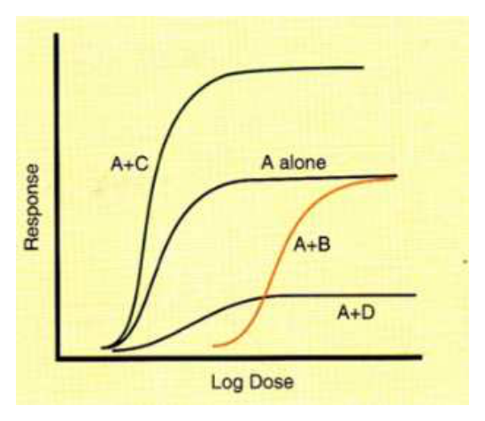
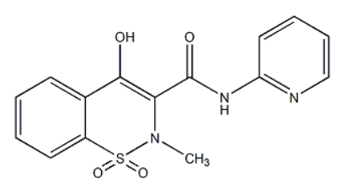
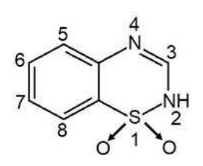
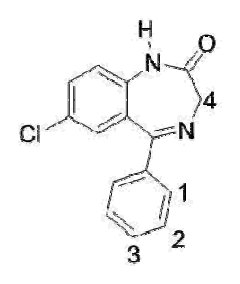
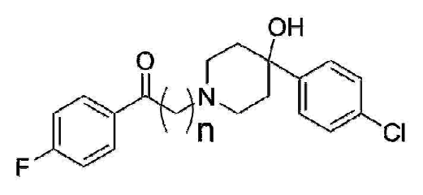
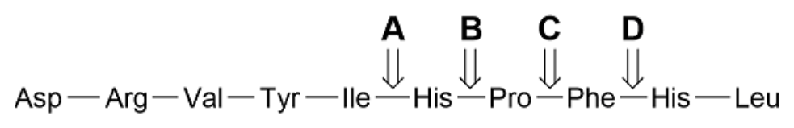
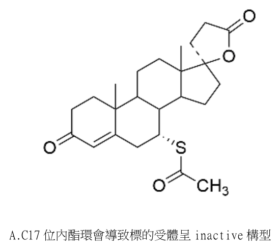
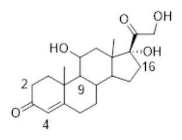
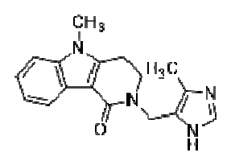

開卷有益 ／
藥師 ／ 藥理學與藥物化學 ／ 113 年第 1 次113 年第 1 次藥師藥理學與藥物化學試題與答案
這一頁是民國 113 年第 1 次藥師藥理學與藥物化學的整份歷屆試題，共 80 題，題目與標準答案出自考選部「國家考試試題及測驗式試題答案」開放資料，其中 77 題附有詳解。以下逐題列出題幹、選項與答案；要計時作答或記錄成績，請用線上練習。
考選部原始場次代碼：113020
線上作答這一科 →
全部 80 題
第 1 題
藥物A 為full agonist，下圖是存在他種藥物B、C、D 下藥物A 的濃度反應曲線圖，下列何種受體作用劑未 呈現在圖中？

（A） allosteric activator（B） allosteric inhibitor（C） competitive inhibitor（D） partial agonist答案：（D）
詳解與考點 正解：圖中三條併用曲線各自對應一種典型的受體交互作用模式：A+C 曲線左移且最大反應提高，代表 allosteric activator 增強了 A 與受體的親和力與效能；A+B 曲線右移但最大反應維持不變，符合 competitive inhibitor 可被高劑量 A 克服的特徵；A+D 曲線最大反應下降、起始位置未明顯右移，代表 allosteric inhibitor 降低了受體的最大反應能力。圖中並未出現一條藥物單獨給藥時最大反應即低於全促效劑 A 的曲線，partial agonist 未呈現在圖中，故選 D。
A：allosteric activator 對應 A+C 曲線的左移與最大反應提高，已呈現在圖中。
B：allosteric inhibitor 對應 A+D 曲線最大反應下降的特徵，已呈現在圖中。
C：competitive inhibitor 對應 A+B 曲線右移、最大反應不變的特徵，已呈現在圖中。
本題考點：濃度反應曲線判讀受體作用劑類型（reading agonist/antagonist type from a dose-response curve）——左移且最大反應增加為 allosteric activator；右移、最大反應不變為 competitive inhibitor；最大反應下降、起始位置不變為 allosteric inhibitor；partial agonist 須觀察藥物單獨給藥時的最大反應，圖中曲線皆為併用結果，故未涵蓋此類型。
第 2 題
下列抗微生物藥物之搭配，何者不具有協同作用（synergistic effect）？
（A） trimethoprim＋sulfamethoxazole（B） amphotericin B＋flucytosine（C） piperacillin＋tazobactam（D） tetracycline＋vancomycin答案：（D）
詳解與考點 正解：抗菌併用是否協同，取決於一藥是否增強另一藥的有效濃度或阻斷互補路徑。（D）tetracycline 為抑制蛋白質合成的抑菌劑，與抑制細胞壁合成的 vancomycin 並無此種標準協同組合，且抑制細菌生長可削弱細胞壁活性藥的殺菌效應，故選 D。
A：（A）sulfamethoxazole 與 trimethoprim 連續阻斷葉酸合成路徑，前者抑制 dihydropteroate synthase，後者抑制 dihydrofolate reductase，具有協同作用，故非答案。
B：（B）amphotericin B 增加真菌細胞膜通透性，可促進 flucytosine 進入細胞，因此是經典協同組合，故非答案。
C：（C）tazobactam 抑制 β-lactamase，使 piperacillin 免於被酵素破壞並恢復抗菌活性，具有協同作用，故非答案。
本題考點：抗微生物藥物協同作用（antimicrobial synergism）——判斷併用效果時，找是否有連續代謝阻斷、通透性增加或失活酵素抑制；抑菌劑與殺菌劑併用（bacteriostatic-bactericidal combination）——若殺菌作用需要細菌增殖，抑菌藥可能不是協同搭配。
第 3 題
病患因Gram-negative bacteria 感染導致肺炎，且該病患對於penicillins 藥物會引起全身性過敏反應，下 列何者是治療此病人的首選藥物？
（A） ceftriaxone（B） vancomycin（C） aztreonam（D） azithromycin答案：（C）
詳解與考點 正解：肺炎病原被限定為 Gram-negative bacteria，且題幹有 penicillins 引起全身性過敏反應，需同時兼顧革蘭陰性菌涵蓋與避免一般 penicillin 類藥物。aztreonam 是 monobactam，可作用於好氧革蘭陰性菌，並常作為嚴重 penicillin 過敏時的替代選項；（C）最符合條件，故選 C。
A：（A）ceftriaxone 雖可涵蓋不少革蘭陰性菌，但屬 cephalosporin。在題幹特別強調全身性 penicillin 過敏時，不是優先的安全選擇。
B：（B）vancomycin 主要用於革蘭陽性菌，無法針對題幹指定的革蘭陰性菌感染作為首選。
D：（D）azithromycin 可用於部分非典型呼吸道病原，但對已明確指定的革蘭陰性菌感染並非此題的優先涵蓋藥物。
本題考點：aztreonam（monobactam）——遇到好氧革蘭陰性菌且有嚴重 penicillin 過敏線索時，可優先辨識此類替代選項；抗生素選擇（antibiotic selection）——首選要同時滿足病原菌涵蓋與過敏風險，不能只看其中一項。
第 4 題
下列何種藥物的活化，需與微生物之acyl carrier protein（AcpM）與beta-ketoacyl carrier protein synthetase（KasA）形成共價結合，才具有抗菌的作用？
（A） isoniazid（B） rifabutin（C） ethambutol（D） cycloserine答案：（A）
詳解與考點 正解：AcpM 與 KasA 是分枝桿菌 mycolic acid 生合成的線索，指向需經菌內活化的 isoniazid。isoniazid 經 KatG 活化後生成 isonicotinoyl-NAD adduct，抑制 FAS-II 系統的 InhA；活化產物並與題幹所述的 AcpM 及 KasA 形成共價複合物，阻斷 mycolic acid 合成；（A）符合題幹，故選 A。
B：（B）rifabutin 抑制細菌 RNA polymerase，作用在轉錄，無 AcpM/KasA 機轉。
C：（C）ethambutol 抑制 arabinosyl transferase，干擾細胞壁 arabinogalactan 生成，非 mycolic acid 路徑。
D：（D）cycloserine 是 D-alanine 類似物，抑制 alanine racemase 與 D-Ala-D-Ala ligase，阻斷 peptidoglycan 前驅物合成。
本題考點：isoniazid 活化（isoniazid activation）——看到 KatG 活化與分枝桿菌脂質合成線索時，聯想到 isoniazid；分枝桿菌細胞壁合成（mycobacterial cell-wall biosynthesis）——mycolic acid、arabinogalactan 與 peptidoglycan 是不同層次，須依題幹蛋白或酵素定位藥物。
第 5 題
Fluoroquinolones 抗生素中，下列何者對於綠膿桿菌（Pseudomonas aeruginosa）的抗菌作用最強？
（A） ciprofloxacin（B） moxifloxacin（C） gemifloxacin（D） norfloxacin答案：（A）
詳解與考點 正解：題幹限定在 fluoroquinolones 中比較對 Pseudomonas aeruginosa 的活性，應選具較強抗綠膿桿菌效力的 ciprofloxacin。（A）是此類比較的代表藥物，故選 A。
B：（B）moxifloxacin 的呼吸道病原與革蘭陽性菌活性較受重視，但不是對綠膿桿菌最強的 fluoroquinolone。
C：（C）gemifloxacin 亦偏重呼吸道感染的藥效定位，對綠膿桿菌的活性不及 ciprofloxacin。
D：（D）norfloxacin 可用於部分泌尿道感染，雖有一定革蘭陰性菌活性，抗綠膿桿菌效力仍不及 ciprofloxacin。
本題考點：fluoroquinolone 抗菌譜（fluoroquinolone spectrum）——題目指定 Pseudomonas aeruginosa 時，優先辨識 ciprofloxacin 的抗綠膿桿菌活性；同類藥物區分（within-class differentiation）——同屬 fluoroquinolones 不代表抗菌譜相同，須按病原菌而非只按藥物類別選擇。
第 6 題
上皮生長因子受體（epidermal growth factor receptor, EGFR）常高度表現於腫瘤細胞，下列抗癌藥物中， 何者不是透過影響EGFR 而達到抗癌作用？
（A） erlotinib（B） osimertinib（C） cetuximab（D） imatinib答案：（D）
詳解與考點 正解：判準是藥物的主要標的是否為 EGFR 或其細胞外受體結合區。（D）imatinib 主要抑制 BCR-ABL、c-KIT 與 PDGFR，不是以影響 EGFR 達到抗癌作用，故選 D。
A：（A）erlotinib 是 EGFR tyrosine kinase inhibitor，直接抑制受體胞內訊號傳遞，敘述所指機轉正確，故非答案。
B：（B）osimertinib 為作用於 EGFR 突變型的 tyrosine kinase inhibitor，仍屬影響 EGFR 的抗癌藥，故非答案。
C：（C）cetuximab 是結合 EGFR 細胞外區域的 monoclonal antibody，阻斷受體活化，故非答案。
本題考點：EGFR 標靶治療（EGFR-targeted therapy）——小分子 tyrosine kinase inhibitor 與抗體雖作用位置不同，都以 EGFR 為標的；imatinib 標的（BCR-ABL, c-KIT, and PDGFR）——辨別標靶藥時，先背出其核心 kinase 標的，避免因同為抗癌藥而混淆。
第 7 題
造成alkylating agent cyclophosphamide 抗藥性的原因，下列何者錯誤？
（A） 癌細胞之glutathione 含量增加（B） 癌細胞之輸送藥物進入細胞的運輸蛋白表現量降低（C） 癌細胞之glutathione S-transferase 活性降低（D） 癌細胞之DNA 修復酵素活性增加答案：（C）
詳解與考點 正解：alkylating agent 的抗藥性會在癌細胞降低有效藥物量、加強解毒或加強 DNA 修復時上升。（C）glutathione S-transferase 活性降低反而會減少對活性代謝物的解毒，不會造成 cyclophosphamide 抗藥性，故選 C。
A：（A）glutathione 含量增加可結合並中和部分活性代謝物，降低藥物造成的細胞毒性，是合理的抗藥性機轉，故非答案。
B：（B）輸送藥物進入細胞的運輸蛋白表現量降低，會使細胞內藥物累積量下降，屬可造成抗藥性的機轉，故非答案。
D：（D）DNA 修復酵素活性增加可修補 alkylating agent 所致的 DNA 損傷，減弱細胞死亡，屬可造成抗藥性的機轉，故非答案。
本題考點：alkylating agent 抗藥性（alkylating-agent resistance）——看細胞是否減少藥物進入、增加解毒或增加 DNA 修復，三者都會降低療效；glutathione S-transferase（GST）——GST 活性上升會促進解毒，方向下降則與抗藥性相反。
第 8 題
有關immune checkpoint inhibitors 與其目標物的組合，下列何者錯誤？
（A） basiliximab ─ 抑制T 淋巴細胞表面之CD2（B） ipilimumab ─ 抑制T 淋巴細胞表面之CTLA-4（C） pembrolizumab ─ 抑制T 淋巴細胞表面之programmed death receptor（PD-1）（D） atezolizumab ─ 抑制癌細胞表面之PD ligand-1（PD-L1）答案：（A）
詳解與考點 正解：免疫檢查點藥物的辨識要以抗體實際結合的受體或配體為準。（A）basiliximab 的標的是活化 T 淋巴細胞上的 CD25，也就是 IL-2 receptor α-chain，不是 CD2，且不屬於以 CTLA-4 或 PD-1/PD-L1 軸為主的免疫檢查點抑制劑，故選 A。
B：（B）ipilimumab 阻斷 T 淋巴細胞表面的 CTLA-4，解除抑制性訊號，組合正確，故非答案。
C：（C）pembrolizumab 結合 T 淋巴細胞表面的 PD-1，屬 PD-1 checkpoint inhibitor，組合正確，故非答案。
D：（D）atezolizumab 結合腫瘤或免疫細胞表面的 PD-L1，阻斷 PD-1/PD-L1 訊號，組合正確，故非答案。
本題考點：免疫檢查點抑制劑（immune checkpoint inhibitors）——先分 CTLA-4、PD-1 與 PD-L1 三條軸，再對應抗體標的；basiliximab（anti-CD25 antibody）——看到 CD25 時要聯想到 IL-2 receptor α-chain，而不是 CD2 或腫瘤免疫檢查點。
第 9 題
臨床上IL-17 抑制劑被用來治療嚴重斑塊型乾癬（severe plaque psoriasis），下列何者免疫抑制劑不屬於 IL-17 抑制劑？
（A） ixekizumab（B） secukinumab（C） brodalumab（D） siltuximab答案：（D）
詳解與考點 正解：IL-17 抑制劑可直接中和 IL-17 配體，或阻斷其受體；（D）siltuximab 的標的是 IL-6，與 IL-17 路徑不同，故選 D。
A：（A）ixekizumab 中和 IL-17A，屬 IL-17 路徑抑制劑，故非答案。
B：（B）secukinumab 亦以 IL-17A 為標的，屬 IL-17 抑制劑，故非答案。
C：（C）brodalumab 阻斷 IL-17 receptor A，雖不是直接中和 IL-17A，仍屬 IL-17 路徑抑制，故非答案。
本題考點：IL-17 路徑抑制（IL-17 pathway inhibition）——看到 IL-17A 配體或 IL-17 receptor A 皆可歸入 IL-17 路徑藥物；細胞激素標的區分（cytokine-target differentiation）——siltuximab 對應 IL-6，不能因同為免疫抑制抗體而歸到 IL-17。
第 10 題
下列有關降血脂藥物rosuvastatin 之敘述，何者錯誤？
（A） 由肝臟CYP3A4 代謝，具首渡效應（B） 主要作用標的為HMG-CoA reductase（C） 肌病變（myopathy）為重要副作用（D） 可降低血中LDL 的濃度答案：（A）
詳解與考點 正解：rosuvastatin 的重要辨識點是並非主要由 CYP3A4 代謝。（A）把它寫成由 CYP3A4 代謝並具該代謝特徵的首渡效應，核心代謝途徑即錯；rosuvastatin 的 CYP 代謝程度有限，故選 A。
B：（B）rosuvastatin 與其他 statins 一樣，主要抑制 HMG-CoA reductase，降低肝臟膽固醇合成，敘述正確，故非答案。
C：（C）肌病變是 statins 的重要不良反應，出現肌肉症狀時須警覺此類風險，敘述正確，故非答案。
D：（D）抑制肝臟膽固醇合成會增加 LDL receptor 介導的清除，因此可降低血中 LDL 濃度，敘述正確，故非答案。
本題考點：rosuvastatin 代謝（rosuvastatin metabolism）——遇到 CYP3A4 選項時，不要套用到所有 statins，rosuvastatin 的 CYP3A4 代謝不顯著；HMG-CoA reductase 抑制（HMG-CoA reductase inhibition）——判斷 statins 藥效時，從肝臟膽固醇合成下降與 LDL 清除增加連結到 LDL 降低。
第 11 題
下列荷爾蒙中，何者主要用於治療垂體性尿崩症（pituitary diabetes insipidus）？
（A） oxytocin（B） somatotropin（C） aldosterone（D） vasopressin答案：（D）
詳解與考點 正解：垂體性尿崩症的核心是 antidiuretic hormone 缺乏，治療需補足抗利尿作用。vasopressin 可經腎臟 V2 receptor 增加水再吸收；（D）符合病因治療，故選 D。
A：（A）oxytocin 主要促進子宮收縮與乳汁射出，不能補償抗利尿激素缺乏。
B：（B）somatotropin 是 growth hormone，作用於生長與代謝調節，非尿崩症的主要替代治療。
C：（C）aldosterone 促進鈉再吸收與鉀排出，但不能取代 vasopressin 對集合管水通透性的調節。
本題考點：垂體性尿崩症（central diabetes insipidus）——遇到 antidiuretic hormone 缺乏時，選擇補足 vasopressin 活性的藥物；V2 receptor（vasopressin V2 receptor）——判斷抗利尿效果時，看腎集合管水再吸收是否增加，而非只看鈉離子處理。
第 12 題
下列類固醇衍生物中，何者具有最強效的抗發炎作用？
（A） betamethasone（B） prednisolone（C） hydrocortisone（D） paramethasone答案：（A）
詳解與考點 正解：比較全身性糖皮質素時，判準是抗發炎效價而非是否同屬類固醇。betamethasone 的糖皮質素活性在四者中最高，能最強地抑制發炎相關基因轉錄與發炎介質生成，故選 A。
B：prednisolone 具有明確的抗發炎作用，但效價低於（A）betamethasone；兩者差在糖皮質素效力，不是有無抗發炎活性。
C：hydrocortisone 接近內源性 cortisol，糖皮質素效力較低，且保有較顯著的礦物皮質素作用，並非本組最強的抗發炎選擇。
D：paramethasone 也是具抗發炎效力的合成糖皮質素，但強度仍不及（A）betamethasone。
本題考點：糖皮質素抗發炎效價（glucocorticoid anti-inflammatory potency）——同類藥比較時先依相對糖皮質素效價排序，不能只看是否為類固醇；礦物皮質素活性（mineralocorticoid activity）——選藥時須與抗發炎效力分開判斷，兩者不是必然同方向。
第 13 題
下列何者會誘導促性腺激素（gonadotropins）的釋出，可作為促排卵劑（ovulation-inducing agent）？
（A） flutamide（B） spironolactone（C） somatostatin（D） clomiphene答案：（D）
詳解與考點 正解：促排卵需要解除雌激素對下視丘與腦下垂體的負回饋，使 GnRH、FSH 與 LH 分泌增加。clomiphene 是選擇性雌激素受體調節劑，在中樞呈抗雌激素作用，因而誘導 gonadotropins 釋出並促進排卵，故選 D。
A：flutamide 是 androgen receptor 拮抗劑，主要用於抑制雄性素訊號，並非以誘導排卵為臨床用途。
B：spironolactone 主要拮抗 mineralocorticoid receptor，另有抗雄性素作用；它不會藉解除雌激素負回饋來誘發排卵。
C：somatostatin 的特徵是抑制多種腦下垂體與腸胃道激素分泌，與促進 gonadotropins 釋出的方向相反。
本題考點：clomiphene（selective estrogen receptor modulator）——不排卵而需促排卵時，判斷其是否能在下視丘解除雌激素負回饋；下視丘－腦下垂體－性腺軸（hypothalamic-pituitary-gonadal axis）——中樞雌激素訊號下降會提高 GnRH，進而帶動 FSH 與 LH。
第 14 題
下列治療糖尿病藥物中，何者最不易產生低血糖及體重增加的副作用？
（A） insulin（B） metformin（C） glipizide（D） tolazamide答案：（B）
詳解與考點 正解：題目同時要求低血糖與體重增加風險最低，應選不直接促使胰島素分泌的藥物。metformin 主要降低肝臟糖質新生並改善胰島素敏感性，單用時低血糖少見，體重通常不增加，故選 B。
A：insulin 直接降低血糖，劑量與進食不平衡時可造成低血糖；促進能量儲存也常使體重增加。
C：glipizide 為 sulfonylurea，藉刺激胰島素分泌降血糖，因此低血糖與體重增加都較（B）metformin 常見。
D：tolazamide 同屬 sulfonylurea，誘發胰島素分泌的機轉使其副作用方向與（C）glipizide 相同。
本題考點：metformin（biguanide）——需避開低血糖與體重增加時，優先辨認不直接增加胰島素分泌的降血糖藥；磺醯脲類（sulfonylureas）——凡以持續刺激胰島素釋放降血糖者，低血糖與體重增加風險都要一併評估。
第 15 題
有關sacubitril 用於治療心衰竭之藥理作用，下列敘述何者正確？
（A） 為前驅藥（prodrug），能抑制neprilysin 被降解（B） 能促進brain natriuretic peptide 和atrial natriuretic peptide 生合成，並促進angiotensin II 和 bradykinin 降解，減少心臟前負荷（preload），減少心臟重塑（C） 與valsartan 併用時，能促進血管擴張作用，減少心臟前負荷（preload）或後負荷（afterload），減少心 臟重塑（D） 降血壓藥物aliskiren 常與sacubitril 併用於治療心衰竭病人答案：（C）
詳解與考點 正解：sacubitril 與 valsartan 併用的關鍵，是同時提高利鈉胜肽作用並阻斷 angiotensin II 的 AT1 受體效應。前者增加血管擴張與排鈉，後者減少血管收縮與醛固酮相關作用，因此可降低 preload、afterload 與不良心臟重塑，故選 C。
A：sacubitril 雖為前驅藥，但其活性代謝物抑制的是 neprilysin 的酵素活性，不是抑制 neprilysin 被降解。
B：neprilysin 抑制會減少利鈉胜肽與 bradykinin 的分解而提高其作用，並不是促進其生合成或促進 bradykinin 降解；敘述把作用方向顛倒。
D：aliskiren 是直接 renin inhibitor，並非與 sacubitril 常規併用的心衰竭組合；（C）的 valsartan 才是此組合中阻斷 AT1 受體的成分。
本題考點：血管張力素受體－腦啡肽酶抑制劑（angiotensin receptor-neprilysin inhibitor）——看到 sacubitril/valsartan 時，要拆成 neprilysin 抑制與 AT1 receptor blockade 兩條路徑判斷；利鈉胜肽（natriuretic peptides）——抑制其分解會增加血管擴張與排鈉，進而同時減輕前負荷與後負荷。
第 16 題
關於心衰竭治療劑之藥理特性，下列何者正確？
（A） 強心配醣體（cardiac glycosides）能直接增加心臟收縮力，主要經由肝臟代謝，原型藥物不會經由尿液排 出（B） bipyridine 類藥物milrinone 會抑制phosphodiesterase-3，經由增加心肌細胞內cAMP 來產生強心作用（C） levosimendan 主要經由增加myosin heavy chain 對鈣離子的敏感度產生強心作用（D） eplerenone 能抑制angiotensin II 之產生，並可產生利尿作用，減少心臟前負荷答案：（B）
詳解與考點 正解：milrinone 是 bipyridine 類 phosphodiesterase 3 inhibitor；抑制 PDE3 後，心肌細胞內 cAMP 上升，增加鈣離子處理與收縮力，形成正性肌力作用，故選 B。
A：cardiac glycosides 的正性肌力作用正確，但不能把整類藥物說成主要經肝代謝且原型不經尿排泄；例如 digoxin 有顯著腎臟排除。
C：levosimendan 的鈣增敏作用主要是增加 troponin C 對鈣離子的敏感性，不是作用於 myosin heavy chain。
D：eplerenone 拮抗 mineralocorticoid receptor，藉減少醛固酮效應而保鉀利尿；它不抑制 angiotensin II 的生成。
本題考點：PDE3 抑制劑（phosphodiesterase 3 inhibitors）——急性需要正性肌力時，看到 PDE3 inhibition 應連結到 cAMP 上升與收縮力增加；鈣增敏劑（calcium sensitizer）——levosimendan 的辨識點是 troponin C，不是直接增加細胞內鈣或改變 myosin heavy chain。
第 17 題
下列那些降血壓藥物可用於治療妊娠性高血壓？①hydralazine ②methyldopa ③amlodipine ④ aliskiren ⑤propranolol ⑥losartan
（A） ①②③（B） ②⑤⑥（C） ②③④（D） ①④⑤答案：（A）
詳解與考點 正解：妊娠性高血壓的用藥篩選，關鍵在避開會干擾胎兒腎臟發育的腎素－血管張力素系統抑制藥。①hydralazine 為直接血管擴張劑，②methyldopa 為中樞性 α2 作用劑，③amlodipine 為二氫吡啶類鈣離子通道阻斷劑，均可列為本題可用的組合，故選 A。
B：此組合含（⑥）losartan。losartan 為 angiotensin II receptor blocker，妊娠中應避免使用；（⑤）propranolol 也不是本題所列妊娠性高血壓的標準選用藥，須審慎考量胎兒心跳與生長相關風險。
C：此組合含（④）aliskiren。aliskiren 為直接 renin inhibitor，同樣抑制腎素－血管張力素系統，不適用於妊娠。
D：雖含（①）hydralazine，但含有（④）aliskiren 已使組合不成立；（⑤）propranolol 亦非本題的標準選項。
本題考點：妊娠性高血壓用藥（hypertension in pregnancy）——先排除 ACE inhibitors、ARBs 與 direct renin inhibitors，再辨識可用的血管擴張劑、中樞性 α2 作用劑或鈣離子通道阻斷劑；腎素－血管張力素系統（renin-angiotensin system）——妊娠時凡抑制此系統的降壓藥，都要優先列為不適用。
第 18 題
Spironolactone 用於治療高血壓或心衰竭，其藥理作用機制及副作用，下列敘述何者正確？
（A） 抑制aldosterone 釋放，於腎臟減少鈉回收減少體液滯留，易有高血鉀之副作用（B） 抑制aldosterone 生合成，於腎臟減少鉀回收減少體液滯留，易有低血鉀及男性女乳症之副作用（C） 抑制aldosterone 受體，於腎臟減少鈉回收減少體液滯留，易有高血鉀之副作用（D） 抑制anti-diuretic hormone，刺激aldosterone 生合成和釋放，易有低血鉀及男性女乳症之副作用答案：（C）
詳解與考點 正解：spironolactone 的作用位置是腎臟遠曲小管末端與集尿管的 mineralocorticoid receptor。拮抗 aldosterone 後，鈉再吸收減少而排鈉利尿，鉀分泌減少而容易高血鉀；其抗雄性素相關作用也可造成男性女乳症，故選 C。
A：spironolactone 不抑制 aldosterone 的釋放，正確機轉是阻斷 aldosterone 已與受體結合後的效應。
B：此藥不抑制 aldosterone 生合成，且它保留鉀離子而非造成低血鉀；男性女乳症雖可能出現，不能補正前述機轉與電解質方向的錯誤。
D：spironolactone 不抑制 anti-diuretic hormone，也不刺激 aldosterone 生合成；其典型電解質風險是高血鉀而非低血鉀。
本題考點：醛固酮受體拮抗劑（mineralocorticoid receptor antagonists）——判斷 spironolactone 時要連結排鈉、保鉀與抗醛固酮，不要誤作抑制醛固酮合成；spironolactone 不良反應（spironolactone adverse effects）——高血鉀與男性女乳症同時出現時，最能指向此藥的作用機轉。
第 19 題
下列何者不是furosemide 的副作用？
（A） hypokalemic metabolic acidosis（B） ototoxicity（C） hyperuricemia（D） hypomagnesemia答案：（A）
詳解與考點 正解：furosemide 為 loop diuretic，增加遠端鈉輸送與鉀、氫離子排泄，典型酸鹼變化是 hypokalemic metabolic alkalosis。因此（A）所述 hypokalemic metabolic acidosis 的酸鹼方向相反，並非其副作用，故選 A。
B：furosemide 可造成 ototoxicity，特別是在高暴露或與其他耳毒性藥物併用時，這是 loop diuretics 的重要不良反應。
C：loop diuretics 造成體液收縮並影響尿酸排泄，可能引起 hyperuricemia。
D：抑制粗上行支的離子再吸收會增加 magnesium 排出，hypomagnesemia 是 furosemide 可見的電解質異常。
本題考點：袢利尿劑（loop diuretics）——看到 furosemide 時，以低血鉀、代謝性鹼中毒、高尿酸與低鎂作為同方向的副作用組合判斷；酸鹼異常（acid-base disorders）——排出氫離子增加的利尿劑會傾向代謝性鹼中毒，不能與酸中毒混用。
第 20 題
對於利尿劑acetazolamide 之敘述，下列何者錯誤？
（A） 能抑制carbonic anhydrase 的活性（B） 可使尿液酸化（C） 可能會引起腎結石（D） 能降低高山症的症狀答案：（B）
詳解與考點 正解：acetazolamide 抑制腎小管 carbonic anhydrase 後，碳酸氫根再吸收下降而排入尿中，因此尿液會鹼化而非酸化；（B）將尿液酸鹼方向寫反，故選 B。
A：acetazolamide 的直接標的就是 carbonic anhydrase，抑制此酵素是其利尿與酸鹼效應的起點。
C：碳酸氫根尿與鹼性尿液會增加某些結石形成風險，因此腎結石是此藥的可能不良反應。
D：acetazolamide 造成代謝性酸中毒後可增加通氣驅動，能用於降低高山症症狀。
本題考點：碳酸酐酶抑制劑（carbonic anhydrase inhibitors）——判斷 acetazolamide 時先追蹤碳酸氫根流失，尿液鹼化與血液酸化必須分開記；高山症（acute mountain sickness）——需要提升通氣適應時，可利用輕度代謝性酸中毒增加呼吸驅動。
第 21 題
關於血管擴張劑nitroprusside 及nitroglycerine 用於治療急性心臟衰竭的作用，下列何者正確？
（A） 降低前負荷（preload）（B） 增加後負荷（afterload）（C） 降低心跳（D） 增加迷走神經張力（vagal tone）答案：（A）
詳解與考點 正解：急性心衰竭使用 nitroglycerine 或 nitroprusside 的共同血流動力學效應是靜脈擴張，靜脈回流下降後可降低 preload；nitroprusside 還有較明顯的動脈擴張作用，故選 A。
B：血管擴張會降低而非增加血管阻力；nitroprusside 對動脈的作用尤其可降低 afterload。
C：兩者的主要作用不是直接降低心跳，血壓下降時反而可能出現反射性心跳加快。
D：nitroprusside 與 nitroglycerine 都不是藉增加 vagal tone 來改善心衰竭，而是透過 NO 相關平滑肌鬆弛擴張血管。
本題考點：前負荷（preload）——靜脈擴張使回心血量下降，急性鬱血時可迅速減輕肺循環壓力；後負荷（afterload）——動脈擴張降低心室射血阻力，nitroprusside 的此項效果較明顯；一氧化氮供體（nitric oxide donors）——藥效判斷要回到血管平滑肌鬆弛，而非迷走神經作用。
第 22 題
下列何者為擬交感神經作用劑midodrine 最主要之臨床用途？
（A） 高血壓（hypertension）（B） 氣喘（asthma）（C） 青光眼（glaucoma）（D） 姿勢性低血壓（orthostatic hypotension）答案：（D）
詳解與考點 正解：midodrine 的主要作用是活化周邊 α1 受體，使血管收縮、站立時血壓上升，因此最主要用於症狀性姿勢性低血壓，故選 D。
A：midodrine 會升高血壓，不能作為高血壓的治療藥；臥位高血壓反而是使用時要留意的不良反應。
B：氣喘的支氣管擴張需要 β2 受體作用，而 midodrine 的臨床作用重點是周邊 α1 血管收縮。
C：midodrine 沒有降低眼壓的主要作用；青光眼用藥須依房水生成或排出機轉選擇，不能由周邊升壓效果推論。
本題考點：α1 受體致效劑（α1 agonists）——看到周邊血管收縮與站立血壓上升時，應連結到 orthostatic hypotension；姿勢性低血壓（orthostatic hypotension）——治療目標是改善站立灌流壓，升壓藥不適用於一般高血壓。
第 23 題
下列何種藥物為adrenergic α1A及α1D受體高親和性之拮抗劑，最適合用於治療良性攝護腺肥大（benign prostatic hyperplasia）排尿困難病人？
（A） phentolamine（B） tamsulosin（C） phenylephrine（D） brimonidine答案：（B）
詳解與考點 正解：良性攝護腺肥大造成排尿困難時，需放鬆攝護腺與膀胱頸平滑肌。tamsulosin 對 α1A 與 α1D 受體具高親和性，能提供較偏泌尿道的 α1 阻斷作用而改善尿流，故選 B。
A：phentolamine 是非選擇性 α 受體拮抗劑，缺乏對 α1A/α1D 的泌尿道選擇性，較容易伴隨全身血壓下降。
C：phenylephrine 是 α1 受體致效劑，會增加平滑肌收縮，對膀胱出口阻塞的排尿困難沒有解除作用。
D：brimonidine 主要為 α2 受體致效劑，可用於降低眼壓，並不藉 α1A/α1D 阻斷來治療攝護腺肥大。
本題考點：尿路選擇性 α1 阻斷劑（uroselective α1 blockers）——BPH 合併排尿困難時，優先找 α1A/α1D blockade 以放鬆攝護腺與膀胱頸；α 受體亞型（α-adrenoceptor subtypes）——題目提到泌尿道選擇性時，要與非選擇性 α blockade 及 α2 agonism 區分。
第 24 題
下列副交感神經藥物中，何者最不適合用於治療青光眼（glaucoma）？
（A） pilocarpine（B） carbachol（C） echothiophate（D） scopolamine答案：（D）
詳解與考點 正解：治療青光眼若要利用副交感作用，目標是縮瞳與睫狀肌收縮，以促進房水由小梁網排出。scopolamine 是 muscarinic receptor antagonist，會造成散瞳與睫狀肌麻痺，可能使眼壓惡化，因此最不適合，故選 D。
A：pilocarpine 是直接 muscarinic agonist，可造成縮瞳並增加小梁網房水排出，方向符合降低眼壓的需求。
B：carbachol 具有膽鹼致效作用，可引起縮瞳並促進房水排出，雖用途與副作用需個別評估，並非最不適合的選項。
C：echothiophate 為不可逆 acetylcholinesterase inhibitor，會增加 acetylcholine 造成縮瞳與睫狀肌收縮，可用於降低眼壓。
本題考點：膽鹼致效劑治療青光眼（cholinomimetics for glaucoma）——需增加小梁網排出時，找會造成縮瞳與睫狀肌收縮的 muscarinic effect；抗膽鹼藥（antimuscarinics）——散瞳會使青光眼惡化風險上升，與降低眼壓的治療方向相反。
第 25 題
下列何種藥物為α4β2 尼古丁受體部分致效劑（partial agonist），可用於戒菸？
（A） bethanechol（B） varenicline（C） methacholine（D） scopolamine答案：（B）
詳解與考點 正解：戒菸藥 varenicline 是 α4β2 nicotinic receptor 的部分致效劑，可提供較弱的受體刺激以減輕戒斷症狀，也能競爭性降低吸菸時 nicotine 的獎賞效應，故選 B。
A：bethanechol 是直接 muscarinic agonist，主要促進膀胱與腸胃道平滑肌活動，不是尼古丁受體部分致效劑。
C：methacholine 也是 muscarinic agonist，常用於評估支氣管反應性，受體類型與 α4β2 nicotinic receptor 不同。
D：scopolamine 為 muscarinic receptor antagonist，常用於預防暈動病，既非 nicotinic receptor 作用藥，也非戒菸藥。
本題考點：varenicline（α4β2 nicotinic receptor partial agonist）——題目同時出現戒菸與部分致效劑時，直接連結 α4β2 receptor；部分致效劑（partial agonist）——在有完全致效劑時可降低其最大反應，在沒有時仍保留部分刺激，適合用於降低戒斷與獎賞。
第 26 題
下列藥物中，何者屬於選擇性 phosphodiesterase 4 inhibitor，可用於治療慢性阻塞性肺病（COPD）之病 人？
（A） roflumilast（B） zafirlukast（C） ipratropium（D） nedocromil答案：（A）
詳解與考點 正解：roflumilast 是選擇性 phosphodiesterase 4 inhibitor，可提高發炎細胞內 cAMP 並降低 COPD 的發炎反應，故選 A。
B：zafirlukast 是 cysteinyl leukotriene receptor antagonist，作用於 leukotriene 路徑，不抑制 PDE4。
C：ipratropium 是吸入型 muscarinic receptor antagonist，主要藉減少迷走神經性支氣管收縮而擴張氣道，與 PDE4 抑制不同。
D：nedocromil 為肥大細胞穩定相關藥物，並非選擇性 PDE4 inhibitor。
本題考點：PDE4 抑制劑（phosphodiesterase 4 inhibitors）——COPD 題目若指定抗發炎而非立即支氣管擴張，應辨認 roflumilast；氣道藥物機轉（airway drug mechanisms）——leukotriene receptor blockade、muscarinic blockade 與 PDE4 inhibition 都能出現在呼吸系統題目，但作用位置不同。
第 27 題
下列關於lactulose 的敘述，何者錯誤？
（A） 為不能吸收的醣類（B） 受大腸類菌代謝，產生腸氣（flatus）（C） 用於預防及治療慢性便秘（D） 為刺激性瀉劑答案：（D）
詳解與考點 正解：lactulose 是不能被小腸吸收的醣類，進入大腸後被菌叢代謝為具滲透作用的產物，使水分留在腸腔而軟化糞便；它屬滲透性瀉劑，不是刺激性瀉劑，故選 D。
A：lactulose 不被小腸吸收，才能到達大腸產生滲透性作用，敘述正確。
B：大腸菌叢代謝 lactulose 時可產生氣體，腸氣是常見且可由機轉預期的不良反應。
C：lactulose 可用於預防及治療慢性便秘，藉增加腸腔水分改善排便。
本題考點：滲透性瀉劑（osmotic laxatives）——辨認不能吸收的溶質與腸腔保水時，應歸類為 osmotic effect 而非直接刺激腸壁；lactulose（nonabsorbable disaccharide）——大腸菌叢代謝與腸氣可同時出現，是判斷其機轉的重要線索。
第 28 題
下列抗組織胺藥物，那一個具有最強的抗膽鹼（anticholinergic）藥理作用？
（A） fexofenadine（B） cetirizine（C） diphenhydramine（D） loratadine答案：（C）
詳解與考點 正解：第一代 H1 antihistamine 通常較容易進入中樞，且較常保有 muscarinic receptor blockade。diphenhydramine 的抗膽鹼作用在四者中最強，會帶來口乾、便祕、尿滯留與鎮靜等效應，故選 C。
A：fexofenadine 為第二代 H1 antihistamine，周邊選擇性較高，抗膽鹼與中樞鎮靜作用都較少。
B：cetirizine 雖仍可能造成部分嗜睡，但抗膽鹼作用遠低於（C）diphenhydramine。
D：loratadine 是第二代 H1 antihistamine，設計重點是減少第一代藥物的中樞與抗膽鹼不良反應。
本題考點：第一代抗組織胺（first-generation H1 antihistamines）——若題目問鎮靜或抗膽鹼副作用，優先找可進入中樞的第一代藥；抗 muscarinic 作用（anticholinergic effect）——口乾、尿滯留與便祕成組出現時，要從 H1 blockade 以外的受體作用判讀。
第 29 題
下列有關acetaminophen 之敘述，何者錯誤？
（A） 最主要副作用為腎毒性（B） 具有止痛效用（C） 對cyclooxygenase 2 抑制性低（D） 對氣喘無治療效果答案：（A）
詳解與考點 正解：acetaminophen 的重要毒性是過量時產生反應性代謝物造成肝毒性，不是以腎毒性作為最主要副作用；（A）的主毒性器官判斷錯誤，故選 A。
B：acetaminophen 具有止痛與退燒效用，是其常用臨床作用，敘述正確。
C：acetaminophen 對周邊 cyclooxygenase 2 的抑制作用低，抗發炎效果有限，這也說明它主要用於止痛退燒而非取代 NSAIDs 的抗發炎用途。
D：acetaminophen 不具有支氣管擴張或治療氣喘的作用，不能作為氣喘治療藥。
本題考點：acetaminophen 毒性（acetaminophen toxicity）——遇到過量或主毒性問題時，先連結肝臟與反應性代謝物，而不是把 NSAIDs 的腎毒性直接套用；止痛退燒藥（analgesic-antipyretic drugs）——有止痛退燒但周邊抗發炎弱時，應與典型 NSAIDs 的作用輪廓區分。
第 30 題
肉毒桿菌毒素（botulinum toxin）除了可用於消除皺紋外，尚有許多其他的臨床用途，下列何者不是肉毒桿 菌毒素的臨床適應症？
（A） 膀胱過動（overactive bladder）引起尿失禁（B） 腦性麻痺（cerebral palsy）所致下肢痙攣（C） 藥物引起之肌肉無力（muscle weakness）（D） 偏頭痛（migraine）答案：（C）
詳解與考點 正解：botulinum toxin 阻斷神經末梢 acetylcholine 釋放，使過度收縮的肌肉或平滑肌鬆弛；既有藥物引起的 muscle weakness 不會因其改善，反而可能加重神經肌肉傳遞不足，因此不是適應症，故選 C。
A：注射 botulinum toxin 可降低逼尿肌過度活動，能用於 overactive bladder 所致的尿失禁。
B：腦性麻痺造成的下肢痙攣屬肌肉過度張力，局部注射可降低痙攣並改善功能照護。
D：botulinum toxin 可用於偏頭痛預防，與治療肌肉無力的方向不同。
本題考點：肉毒桿菌毒素（botulinum toxin）——凡是病理核心為過度 cholinergic 肌肉收縮或平滑肌過度活動時，才可能從抑制 acetylcholine 釋放獲益；神經肌肉傳遞（neuromuscular transmission）——既有無力時再降低 acetylcholine 釋放會惡化，而不是治療無力。
第 31 題
臨床上進行局部麻醉時，常會將局部麻醉劑併用適量腎上腺素（epinephrine），下列何者不是其併用之好 處？
（A） 可促進局部麻醉劑被神經細胞吸收（B） 使麻醉劑蓄積在局部組織而延長藥效（C） 與局部麻醉劑結合而保護其不被分解（D） 進行脊髓麻醉時，腎上腺素可產生止痛作用答案：（C）
詳解與考點 正解：局部麻醉劑併用 epinephrine 的核心是局部 α1 血管收縮，使局部血流與全身吸收下降，藥物得以停留在作用部位較久。epinephrine 不會與局部麻醉劑結合來保護其免於分解，因此（C）不是併用的好處，故選 C。
A：局部血流減少可使麻醉劑在神經周邊維持較高的有效濃度，有利其進入神經纖維作用位置。
B：血管收縮減少麻醉劑離開局部組織的速度，能延長局部麻醉效果並降低全身暴露。
D：在脊髓麻醉中，epinephrine 可作為輔助藥增強止痛並延長阻斷效果，屬特定給藥情境下的併用效益。
本題考點：局部麻醉劑佐劑（local anesthetic adjuvants）——判斷 epinephrine 併用理由時，應回到 α1 vasoconstriction 對局部灌流與全身吸收的影響；局部麻醉藥動學（local anesthetic pharmacokinetics）——延長藥效是減慢自注射部位移除，不是藉藥物間直接結合防止代謝。
第 32 題
濫用鴉片藥物（opioids）者發生急性過量中毒時，為緊急處置其呼吸抑制及昏迷現象，最適合立即注射下列 何者？
（A） buprenorphine（B） naloxone（C） dextromethorphan（D） methylnaltrexone答案：（B）
詳解與考點 正解：題幹的急性過量中毒伴隨呼吸抑制與昏迷，需立刻逆轉中樞的 μ-opioid receptor 作用。naloxone 是競爭性 opioid receptor antagonist，可迅速解除 opioid 所致的呼吸抑制，故選 B。
A：buprenorphine 是 partial μ-opioid receptor agonist，可用於 opioid use disorder，卻不是過量中毒時的立即逆轉劑，且可能誘發戒斷症狀。
C：dextromethorphan 是鎮咳藥，並非用來拮抗 μ-opioid receptor 所致的呼吸抑制，不能取代 naloxone。
D：methylnaltrexone 是周邊作用的 μ-opioid receptor antagonist，用於 opioid-induced constipation；它幾乎不進入中樞，無法緊急處理昏迷與呼吸抑制。
本題考點：opioid overdose reversal——遇到呼吸抑制與意識降低時，先辨認是否須以中樞 opioid receptor antagonist 迅速逆轉；naloxone——用於急性 opioid 中毒的救援，而周邊拮抗劑只處理腸胃道副作用。
第 33 題
鋰鹽可以用來輔助治療雙向情感障礙（bipolar disorder）的情緒亢奮期（manic phase），細胞內許多酵素 都會受到鋰鹽調控，但不包括下列何者？
（A） bisphosphate nucleotidase（B） inositol polyphosphate 1-phosphatase（C） GABA transaminase（D） glycogen synthase kinase-3答案：（C）
詳解與考點 正解：鋰鹽治療躁期的細胞內訊號作用，集中在 inositol 代謝循環與 glycogen synthase kinase-3 等酵素調控；GABA transaminase 不在此列，故選 C。
A：bisphosphate nucleotidase 本身即是鋰鹽可抑制的酵素，會受鋰鹽調控，因此不是答案。
B：inositol polyphosphate 1-phosphatase 是鋰鹽抑制的目標之一，會影響 inositol recycling，故此敘述正確。
D：glycogen synthase kinase-3 亦是鋰鹽的重要細胞內調控標的，不能選作不包括的酵素。
本題考點：lithium signaling——辨認鋰鹽時優先連結 inositol depletion 與 glycogen synthase kinase-3 inhibition；GABA transaminase——此酵素的抑制是 vigabatrin 的辨識點，不可與鋰鹽混同。
第 34 題
關於phenytoin 的敘述，下列何者正確？
（A） 具有抗癲癇的效用，也可產生抗心律不整作用（B） 主要用於治療失神性癲癇（absence seizures）（C） carbamazepine 會抑制phenytoin 之代謝（D） 副作用有青光眼、腎結石、禿頭答案：（A）
詳解與考點 正解：phenytoin 阻斷 voltage-gated sodium channel，除了抗癲癇，也具 Class IB 抗心律不整作用，故選 A。
B：phenytoin 不主要治療 absence seizures，這類發作較常以 ethosuximide 或 valproate 為治療選擇；分辨關鍵在 absence seizure 的 thalamic calcium channel 機轉。
C：carbamazepine 具有肝臟藥物代謝酵素誘導作用，不能概括為抑制 phenytoin 代謝；兩藥的交互作用重點是血中濃度可能受酵素誘導影響。
D：phenytoin 常見的不良反應包括眼震、共濟失調、牙齦增生與多毛；青光眼、腎結石、禿頭並非其典型組合。
本題考點：phenytoin——以 sodium channel blockade 辨認其抗癲癇與 Class IB 抗心律不整雙重用途；absence seizure treatment——判斷失神性癲癇時，勿把 phenytoin 當作主要用藥。
第 35 題
下列那一種治療帕金森氏症的藥物，可直接活化D2型的多巴胺受體，產生其藥理作用？
（A） amantadine（B） ropinirole（C） selegiline（D） carbidopa答案：（B）
詳解與考點 正解：題幹指定直接活化 D2 型 dopamine receptor，符合 dopamine agonist 的 ropinirole，故選 B。
A：amantadine 主要增加 dopamine 釋放、減少再攝取，並有 NMDA receptor antagonist 作用，不是直接 D2 agonist。
C：selegiline 是選擇性 MAO-B inhibitor，藉由減少 dopamine 分解提升 dopamine 訊號，作用位置不在 receptor 的直接活化。
D：carbidopa 抑制周邊 aromatic L-amino acid decarboxylase，用來減少 levodopa 的周邊代謝，沒有直接活化 dopamine receptor 的作用。
本題考點：dopamine agonist——題目問直接活化 receptor 時，選 ropinirole 這類 agonist，不選增加 dopamine 濃度的藥；Parkinson disease pharmacotherapy——依作用位置區分 receptor agonist、MAO-B inhibitor 與 levodopa 周邊代謝抑制劑。
第 36 題
有關鎮靜－安眠（sedative-hypnotic）藥物的敘述，下列何者錯誤？
（A） 使用越高劑量的藥物時，其眼球快動型睡眠（rapid eye movement）的期間越長（B） 對於有長期喝酒習慣的人，較容易產生鎮靜－安眠藥物中樞作用的耐受性（tolerance）（C） 將尿液鹼化（alkalinization），可以增加腎臟排除phenobarbital 的作用（D） 使用chlordiazepoxide 可以降低酒精的戒斷現象（withdrawal symptoms）答案：（A）
詳解與考點 正解：本題問錯誤敘述；鎮靜－安眠藥通常會抑制 rapid eye movement sleep，劑量增加不會使其期間越長，故選 A。
B：長期飲酒會造成中樞對抑制性藥物的適應，與鎮靜－安眠藥之間可見 cross-tolerance，因此此敘述正確。
C：phenobarbital 是弱酸性藥物，尿液鹼化後其離子化比例增加、腎小管再吸收減少，腎臟排除會提高，故非答案。
D：chlordiazepoxide 為長效 benzodiazepine，可用於減緩 alcohol withdrawal symptoms，因此此敘述正確。
本題考點：sedative-hypnotic effects on sleep——判斷睡眠結構時，鎮靜－安眠藥通常縮短 REM sleep，不把鎮靜等同於 REM 延長；ion trapping——弱酸性藥物在鹼性尿液中較易離子化，適用於判斷 phenobarbital 的排除方向。
第 37 題
下列有關全身麻醉劑的敘述，何者錯誤？
（A） 脂溶性越高的麻醉劑，其產生麻醉作用所需要的濃度越低（B） 麻醉劑的效價（potency）與最低肺泡麻醉濃度（minimum alveolar anesthetic concentration, MAC）呈 反比（C） 低血液溶解度的氣體麻醉劑，其恢復期較長；反之，高血液溶解度的氣體麻醉劑恢復期較短（D） ketamine 會刺激交感神經活性，使得心跳及血壓上升答案：（C）
詳解與考點 正解：氣體麻醉劑的血液溶解度決定達到腦部有效分壓的速度；低 blood-gas solubility 會使誘導與恢復都較快，高溶解度才較慢，因此（C）把恢復期的方向顛倒，故選 C。
A：脂溶性較高通常代表效價較高，達到麻醉所需的濃度較低，此敘述正確。
B：minimum alveolar anesthetic concentration（MAC）越低，表示所需肺泡濃度越低、效價越高，兩者呈反比，故非答案。
D：ketamine 可提高交感神經活性，常見心跳與血壓上升，此敘述正確。
本題考點：blood-gas partition coefficient——判斷吸入麻醉的誘導與恢復速度時，血液溶解度低代表分壓平衡快；MAC——比較 inhalational anesthetic potency 時，MAC 越小表示效價越強。
第 38 題
下列何種中草藥最應避免與抗凝血劑一起使用，以防止發生出血副作用？
（A） milk thistle（B） ginkgo（C） saw palmetto（D） St. John's wort本題送分，無標準答案
第 39 題
許多天然物或中草藥都具有中樞神經藥理活性，下列何者具有拮抗α2-adrenergic receptor 作用，進而使得 交感神經活性增加？
（A） resveratrol（B） yohimbe（C） milk thistle（D） curcumin答案：（B）
詳解與考點 正解：拮抗 presynaptic α2-adrenergic receptor 會解除 norepinephrine 釋放的負回饋，因而增加交感神經活性；yohimbe 含 yohimbine，符合此機轉，故選 B。
A：resveratrol 是多酚類天然物，常以抗氧化與訊號調節討論，並非 α2-adrenergic receptor antagonist。
C：milk thistle 的主要成分 silymarin 多用於肝臟相關保護作用的討論，沒有本題所問的 α2 receptor 拮抗作用。
D：curcumin 的代表性作用為抗發炎與抗氧化訊號調節，不能據此推論會增加交感神經活性。
本題考點：α2-adrenergic receptor antagonism——看到解除交感神經末梢負回饋、增加 norepinephrine 釋放時，連結 yohimbine；presynaptic autoreceptor——判斷受體拮抗的生理效果時，要分清突觸前負回饋與突觸後效應。
第 40 題
下列那一種螯合劑適用於治療銅中毒？
（A） deferoxamine（B） D-dimethylcysteine（C） edetate calcium disodium（D） succimer答案：（B）
詳解與考點 正解：銅中毒需使用能與銅形成可排出錯合物的螯合劑；D-dimethylcysteine 為 D-penicillamine 的結構名稱之一，可用於銅螯合，故選 B。
A：deferoxamine 對鐵具有高親和力，主要用於鐵中毒或鐵負荷過多，不是治療銅中毒的首選。
C：edetate calcium disodium 主要用於鉛中毒的螯合，金屬選擇性與銅中毒的處置不符。
D：succimer 可用於部分重金屬中毒，尤其常連結鉛中毒；它不是本題銅中毒所對應的標準選項。
本題考點：metal chelation——先把金屬離子與其代表性螯合劑配對，不可只因都是重金屬就互換；D-penicillamine——遇到 copper overload 或銅中毒時，辨認其銅螯合用途。
第 41 題
在藥物設計中，結構中加入一個hydroxyl 基團對於藥物分子脂溶性的影響為何？
（A） 約增加100 倍（B） 約增加10 倍（C） 約減少10 倍（D） 約減少100 倍答案：（C）
詳解與考點 正解：加入 hydroxyl 基團會增加分子的氫鍵能力與極性，使其較不易分配進脂相；在本題的藥物設計近似判斷中，脂溶性約減少 10 倍，故選 C。
A：增加 100 倍與 hydroxyl 基團增加極性的方向相反，不能成立。
B：增加 10 倍同樣把極性增加誤判成脂溶性增加；分辨關鍵在 hydroxyl 基團使水相溶劑化更有利。
D：約減少 100 倍把本題所用的經驗幅度放大了一個數量級，故不正確。
本題考點：lipophilicity——比較取代基時，新增 hydroxyl 通常使 logP 下降；hydrogen bonding——需要估計分子進入脂相的傾向時，同時考慮氫鍵供受體增加造成的極性上升。
第 42 題
下列藥物，何者的酸性最強？
（A） ibuprofen（B） phenacetin（C） propranolol（D） nitroglycerin答案：（A）
詳解與考點 正解：酸性強弱先看可解離質子與共軛鹼是否穩定。ibuprofen 具有 carboxylic acid，其 carboxylate 可由共振穩定，在列出的藥物中酸性最強，故選 A。
B：phenacetin 的 amide N-H 酸性很弱，且其結構不提供 ibuprofen 類 carboxylate 的共振穩定。
C：propranolol 含可質子化的 secondary amine，藥物化學上主要表現為鹼性，與本題比較酸性相反。
D：nitroglycerin 是 nitrate ester，不具有可像 carboxylic acid 一樣解離並穩定負電荷的酸性官能基。
本題考點：carboxylic acid acidity——比較藥物酸性時，看到 carboxylate 的共振穩定應優先判為較強酸；basic amine——含可質子化胺基的藥物通常先從鹼性判讀，不與 carboxylic acid 混為同類。
第 43 題
R-tetrazole 可視為下列何者之生物類性體（bioisostere）？
（A） R-NH2（B） R-SH（C） R-CHO（D） R-COOH答案：（D）
詳解與考點 正解：R-tetrazole 可提供酸性氫，去質子化後的陰離子電荷可離域，與 carboxylate 在酸性與電荷分布上相近，因此可作為 R-COOH 的 bioisostere，故選 D。
A：R-NH2 主要為可接受質子的胺基，酸鹼性與電荷型態皆不同，不能作為 carboxylic acid 的典型替代基。
B：R-SH 雖可能呈弱酸性，但硫醇的大小、極化性與陰離子分布都與 tetrazole 不同。
C：R-CHO 是中性的 aldehyde，偏向 carbonyl electrophile 的反應性，缺乏 tetrazole 所模擬的陰離子型酸性。
本題考點：bioisostere——替換官能基時，同時比較酸鹼性、電荷分布與立體大小，而非只看是否含雜原子；tetrazole-carboxylate replacement——需要保留 carboxylic acid 的陰離子特徵時，tetrazole 是常見替代選擇。
第 44 題
Piroxicam（結構如下圖）之pyridine 環最可能進行何種代謝反應？

（A） reduction（B） N-methylation（C） N-oxide formation（D） hydroxylation答案：（D）
詳解與考點 正解：圖示為 piroxicam，其 pyridine 環經由醯胺鍵接在 benzothiazine 核心上，判準是含氮芳香環在 CYP 代謝中最常見的位置修飾方式——piroxicam 主要經 CYP2C9 催化，在 pyridine 環上進行 hydroxylation，生成 5'-hydroxypiroxicam 這個主要代謝物，故選 D。
A：reduction（還原）通常作用在硝基、醛酮或雙鍵等可被還原的官能基，pyridine 環本身是穩定的芳香雜環，不是還原反應的受質。
B：N-methylation（氮甲基化）是第二相結合反應中常見於雜環胺氮的修飾方式（如組織胺代謝），但 piroxicam 的 pyridine 環氮已經是芳香環的一部分、且未直接參與代謝，實際上該環不會被甲基化。
C：N-oxide formation（氮氧化）雖然含氮雜環確實可能被氧化成 N-oxide，但 piroxicam 的主要代謝路徑並非走此途徑，真正大宗的代謝物是環上氫被取代的 hydroxylation 產物。
本題考點：piroxicam 的代謝途徑（metabolism of piroxicam）——CYP2C9 催化的 pyridine 環 hydroxylation 是主要清除路徑，而非結合反應或還原反應；芳香雜環的 CYP 代謝位置判斷 （regioselectivity of CYP oxidation on heteroaromatic rings）——環上氫的直接氧化取代通常比環外雜原子修飾更常見。
第 45 題
下列關於erythropoietin（EPO）的敘述，何者錯誤？
（A） 由腎臟產生的glycoprotein（B） 能抑制骨髓中的erythroid progenitors，減少紅血球產生（C） 結構中的雙硫鍵及glycosylation 位置與其生物活性相關（D） 可治療慢性腎衰竭引起的貧血答案：（B）
詳解與考點 正解：本題問錯誤敘述；erythropoietin（EPO）會促進骨髓 erythroid progenitors 的存活、增殖與分化，以增加紅血球生成，不是抑制它們，故選 B。
A：EPO 是主要由腎臟產生的 glycoprotein，此敘述正確。
C：EPO 的雙硫鍵與 glycosylation 會影響其結構穩定與生物活性，因此此敘述正確。
D：慢性腎衰竭時 EPO 生成不足會造成貧血，補充 EPO 可作為治療方向，故非答案。
本題考點：erythropoietin——遇到腎性貧血時，連結腎臟 EPO 不足與 erythroid progenitors 刺激不足；glycoprotein biologics——判斷蛋白質藥物活性時，不能忽略 disulfide bond 與 glycosylation 對結構的影響。
第 46 題
下列何種降血脂藥具diaryl-β-lactam 主結構？
（A） gemfibrozil（B） fluvastatin（C） ezetimibe（D） atorvastatin答案：（C）
詳解與考點 正解：diaryl-β-lactam 是 ezetimibe 的特徵主結構，並與其抑制腸道膽固醇吸收的作用相連，故選 C。
A：gemfibrozil 是 fibric acid derivative，以 PPAR-α agonist 降低三酸甘油酯，沒有 diaryl-β-lactam 主結構。
B：fluvastatin 是 statin 類 HMG-CoA reductase inhibitor，其辨識重點是模擬 HMG-CoA 還原反應產物的側鏈，不是 β-lactam。
D：atorvastatin 同為 statin 類，結構分類與 ezetimibe 的 cholesterol absorption inhibitor 不同。
本題考點：ezetimibe structure——看到 diaryl-β-lactam 時，連結 ezetimibe 而非 fibrate 或 statin；lipid-lowering drug classes——先按作用位置分成腸道吸收抑制、PPAR-α 活化與 HMG-CoA reductase inhibition，再回看結構。
第 47 題
下列有關thiazide 利尿劑基本結構（如下圖）之描述，何者錯誤？

（A） 第6 位取代基通常為拉電子基團（B） 如第7 位導入sulfonamide 基團，其基團之酸性為此結構最強者（C） 本類藥物結構通常具三個氮原子（D） 導入3,4-dihydro 取代，可增強活性答案：（B）
詳解與考點 正解：圖中為 benzothiadiazine（thiazide）類利尿劑的通用骨架，環上以 S1 為中心的磺醯基與 N2 相連的 N-H，因同時受到磺醯基與環內亞胺的拉電子效應影響，酸性強於第 7 位苯環上獨立的磺醯胺基（sulfonamide）；「第 7 位磺醯胺基酸性為此結構最強者」的敘述方向相反，才是錯誤選項，故選 B。
A：第 6 位取代基（如 Cl 或 CF3）確為拉電子基團，能提升環系統的整體極化程度，強化與腎小管鈉離子通道的結合，此敘述正確。
C：此類藥物結構通常具三個氮原子，分別是環上的 N2、N4，以及第 7 位磺醯胺基上的氮，此敘述正確。
D：3,4-dihydro 取代使 C3-N4 由雙鍵飽和為單鍵，提升與受體結合的活性，是 hydrochlorothiazide 類藥物活性優於未飽和 chlorothiazide 的結構基礎，此敘述正確。
本題考點：thiazide 類利尿劑的構效關係（thiazide diuretic SAR）——判斷結構中最強酸性質子時，須比較環內磺醯基鄰位 N-H 與環外磺醯胺基的拉電子環境，而非只看官能基種類；3,4-dihydro 飽和與第 6 位拉電子取代皆為提升活性的關鍵修飾。
第 48 題
下列血清胺（serotonin）受體作用藥物，何者不具indole 結構？
（A） rizatriptan（B） zolmitriptan（C） granisetron（D） sumatriptan答案：（C）
詳解與考點 正解：本題以 indole 骨架區分血清胺受體藥物。granisetron 為 5-HT3 receptor antagonist，含的是 indazole 而非 indole 結構，故選 C。
A：rizatriptan 是 triptan 類 5-HT1B/1D receptor agonist，保有與 serotonin 相似的 indole 核心，故非答案。
B：zolmitriptan 同為 triptan 類，結構上具有 indole 骨架，不能選作不具 indole 者。
D：sumatriptan 是 triptan 類的代表藥，具有 indole 核心；分辨關鍵在 triptan 多模擬 serotonin 的 indole pharmacophore。
本題考點：indole scaffold——判斷 serotonin-related drugs 的結構時，先區分 triptan 的 indole 核心與 5-HT3 antagonist 的其他雜環；indazole versus indole——兩者僅一個環內氮原子的差異即可改變結構分類，不能只看名稱相近。
第 49 題
下列有關barbiturate 類鎮靜安眠藥的敘述，何者錯誤？
（A） 親脂性越大，作用時限（duration of action）越長（B） 親脂性越大，作用起始（onset）時間越快（C） 投藥途徑會影響藥物的作用起始時間（D） 本類藥物通常具弱酸性答案：（A）
詳解與考點 正解：本題問錯誤敘述；barbiturate 親脂性提高會加快進入中樞，也更容易由腦重新分布到周邊組織，單次投與後作用時限通常較短，不是較長，故選 A。
B：親脂性較大的 barbiturate 較快通過 blood-brain barrier，作用起始較快，此敘述正確。
C：靜脈、口服等投藥途徑會改變吸收與到達中樞的速度，因此會影響作用起始時間，故非答案。
D：barbiturate 類通常是弱酸性藥物，這也解釋其可受尿液 pH 影響的排除特性。
本題考點：redistribution——脂溶性高的中樞作用藥物，單次給藥後常因離開腦部而縮短臨床效果；barbiturate pharmacokinetics——比較 onset 與 duration 時，要分開看進入腦部速度與後續再分布。
第 50 題
小美看了罹患失智症外婆的藥袋，裡面有個藥名讓她想起藥物化學課有介紹過。該藥結構類似嗎啡，可從石 蒜屬植物抽取得到。請問此藥為下列何者？
（A） donepezil（B） rivastigmine（C） memantine（D） galantamine答案：（D）
詳解與考點 正解：題幹同時給出可由石蒜屬植物取得、結構類似嗎啡的線索，對應天然生物鹼 galantamine；它也是失智症治療可用的 acetylcholinesterase inhibitor，故選 D。
A：donepezil 是合成的 acetylcholinesterase inhibitor，結構來源不符合石蒜屬天然物的線索。
B：rivastigmine 是 carbamate 類 acetylcholinesterase inhibitor，可治療失智症，但不是題幹描述的天然生物鹼。
C：memantine 是 adamantane 衍生物，以 NMDA receptor antagonist 治療失智症，機轉與結構皆不符。
本題考點：galantamine——題幹出現 Amaryllidaceae 或石蒜屬天然物時，連結 galantamine；dementia drugs——比較失智症藥物時，區分 acetylcholinesterase inhibitor 與 NMDA receptor antagonist，勿只按適應症作答。
第 51 題
下列有關阿片類受體（opioid receptor）的敘述，何者正確？
（A） 內生性致效劑dynorphin 含Arg 殘基，能選擇性作用在mu 受體（B） mu 與kappa 致效劑共同的副作用有鎮靜、呼吸抑制及縮瞳（C） 長期使用mu 致效劑後突然停藥，產生戒斷症狀，這與cAMP 的量突然提高有關（D） mu 致效劑會產生欣快感（euphoria），與促進GABA 釋出有關答案：（C）
詳解與考點 正解：長期使用 μ-opioid receptor agonist 時，受體抑制 adenylyl cyclase 的效果會引發細胞代償；突然停藥後 cAMP 訊號反彈性升高，參與戒斷症狀的產生，故選 C。
A：dynorphin 的選擇性較偏向 kappa opioid receptor，不是 mu receptor；即使題幹提到 Arg 殘基，也不能改變其受體偏好。
B：mu 與 kappa agonist 都可鎮靜或縮瞳，但顯著呼吸抑制是 mu agonist 的典型風險，不能視為兩者共同且等量的副作用。
D：mu agonist 的欣快感與抑制 GABAergic interneuron、進而解除 dopamine neuron 抑制有關；敘述寫成促進 GABA 釋出，方向剛好相反。
本題考點：opioid withdrawal——長期 receptor 抑制訊號後突然停藥，注意 cAMP 代償反彈；mesolimbic dopamine disinhibition——判斷 mu agonist 欣快感時，記住先抑制 GABA 再增加 dopamine 訊號的方向。
第 52 題
下列有關benzamide 類之思覺失調症用藥，何者正確？
（A） 本類藥物結構，具pyrrolidone 環（B） 為D2致效劑，可用於止吐（C） amisulpride 可治療負性症狀（D） amisulpride 具phenyl sulfamate 結構答案：（C）
詳解與考點 正解：benzamide 類抗精神病藥的關鍵在其對 dopamine D2/D3 受體的拮抗作用；（C）amisulpride 可在適當劑量下改善思覺失調症的負性症狀，故選 C。
A：（A）所稱的 pyrrolidone 是環內含醯胺羰基的五員環；benzamide 類代表結構可見 pyrrolidine 等胺環，不是 pyrrolidone 環。
B：（B）把 D2 受體作用方向寫反。此類藥阻斷 D2 受體；其止吐效果也是來自化學受器觸發區的 D2 拮抗，而不是 D2 致效。
D：（D）將 amisulpride 的取代基誤作 phenyl sulfamate。amisulpride 是具 ethylsulfonyl 取代的 benzamide，不具有該結構。
本題考點：benzamide 類抗精神病藥（benzamide antipsychotics）——看到 sulpiride 或 amisulpride 時，先以 D2/D3 拮抗判斷作用方向；負性症狀治療（negative symptoms）——區分藥效時，不能把改善負性症狀與受體致效混為一談；雜環辨識（heterocycle identification）——環內是否有羰基，可用來區分 pyrrolidine 與 pyrrolidone。
第 53 題
下列何者為偏頭痛（migraine）的首選用藥？
（A） sumatriptan（B） timolol（C） tapentadol（D） pregabalin答案：（A）
詳解與考點 正解：判準是急性偏頭痛治療中，哪一類藥物具有針對偏頭痛病生理機轉（血管收縮與抑制三叉神經血管系統發炎介質釋放）的專一性療效。sumatriptan 屬 triptan 類藥物，是中重度急性偏頭痛發作時的標準首選治療，故選 A。
B：timolol 屬 β 阻斷劑，用於偏頭痛時是作為預防性（prophylactic）用藥，而非急性發作時的首選治療。
C：tapentadol 屬鴉片類止痛藥，並非偏頭痛的機轉專一治療，且鴉片類藥物用於偏頭痛還有藥物過度使用頭痛的疑慮，不是首選。
D：pregabalin 屬抗癲癇藥物，主要用於神經痛等其他適應症，不是偏頭痛急性期或標準預防的首選藥物。
本題考點：偏頭痛的急性期首選治療（first-line abortive therapy for migraine）——triptan 類藥物針對偏頭痛病生理機轉設計，是中重度急性偏頭痛的標準首選，須與預防性用藥（如 β 阻斷劑）的角色區分。
第 54 題
下列何種阿片類藥物，結構中C-14 位置不具有β-OH 基？
（A） morphine（B） naloxone（C） naltrexone（D） oxymorphone答案：（A）
詳解與考點 正解：C-14 的 β-OH 是區分 morphine 與多個半合成 opioid 衍生物的結構線索；（A）morphine 的 C-14 不具有 β-OH，故選 A。
B：（B）naloxone 為 14-hydroxy 衍生物，C-14 具有 β-OH，因此不符合題目的排除條件。
C：（C）naltrexone 同樣具有 C-14 的 β-OH；不能因其為 opioid 受體拮抗劑而忽略這個結構特徵。
D：（D）oxymorphone 也是 14-hydroxy morphinan 衍生物，C-14 帶有 β-OH。
本題考點：morphinan 結構修飾（morphinan structural modification）——比較 opioid 衍生物時，逐一看 C-3、C-6、C-14 的取代基，不以受體致效或拮抗作用代替結構判讀；14-hydroxy 衍生物（14-hydroxy opioids）——看到 naloxone、naltrexone、oxymorphone 時，可用 C-14 的 β-OH 作為共同辨識點。
第 55 題
將氯原子取代在下圖化合物結構的何何者位置，可產生最佳之抗焦慮活性？

（A） 1（B） 2（C） 3（D） 4答案：（A）
詳解與考點 正解：圖中骨架已於稠合苯環上帶有一個氯原子，本題進一步詢問的是另加氯原子於 5 位苯環的位置。標示「1」的位置最接近苯環與二氮平環的連接碳，屬鄰位（ortho）取代；鄰位鹵素會迫使兩環之間產生扭轉、減少共平面性，這正是 lorazepam、clonazepam 等強效抗焦慮藥物共有的立體特徵，取代於此對受體親和力提升最明顯，故選 A。
B：位置「2」屬苯環的間位（meta）取代，距離連接碳較遠，對兩環扭轉角的影響不如鄰位取代直接，活性增益較小。
C：位置「3」屬對位（para）取代，此位置的取代基幾乎不影響兩環的相對扭轉，是這類結構中對活性貢獻最弱的位置。
D：位置「4」位於二氮平環本身而非苯環，取代基在此處主要影響七員環的立體構型與代謝穩定性，作用機轉與苯環鹵素取代提升受體親和力的方式不同。
本題考點：苯二氮平類藥物 5 位苯環的構效關係（benzodiazepine 5-phenyl SAR）——鄰位鹵素取代造成的非共平面扭轉是提升受體親和力的關鍵立體因素；稠合苯環（7 位）與 5 位苯環的取代效果需分開判斷，兩者影響的立體區域不同。
第 56 題
下圖結構中的碳數（n）為多少時， 其抗精神疾症活性最高？

（A） 1（B） 2（C） 3（D） 4答案：（C）
詳解與考點 正解：圖中結構為丁醯苯類（butyrophenone）抗精神病藥物的通式，苯甲醯基與哌啶氮之間以 (CH2)n 相連。當 n = 3 時，芳香酮與鹼性哌啶氮之間的距離恰好對應 haloperidol 的實際結構，此鏈長使藥效團的兩端能同時契合 dopamine D2 受體結合口袋的空間需求，活性最高，故選 C。
A：n = 1 時鏈長過短，酮基與哌啶氮的距離不足以讓兩個藥效基團分別對位到受體結合口袋，親和力明顯下降。
B：n = 2 時鏈長仍短於最適距離，藥效團間的空間排列與受體口袋契合度不如 n = 3。
D：n = 4 時鏈長超過最適距離，兩藥效基團間的柔軟度增加、易採取不利結合的構型，活性反而低於 n = 3。
本題考點：丁醯苯類抗精神病藥物的鏈長構效關係（butyrophenone chain-length SAR）——芳香酮與鹼性胺基之間需維持特定碳鏈距離才能同時契合受體結合口袋的兩個藥效團位置，過短或過長皆會降低親和力。
第 57 題
下列導致phenylephrine 口服可用率率低於10%之原因，何者錯誤？
（A） 易受COMT 代謝（B） 分子具親水性（C） 於腸道進行glucuronidation（D） 於腸道進行sulfation答案：（A）
詳解與考點 正解：本題要求找出錯誤原因；（A）錯在將 phenylephrine 視為容易受 COMT 代謝的 catechol。phenylephrine 缺少 COMT 所需的鄰位雙酚羥基結構，口服可用率低不是由此造成，故選 A。
B：（B）分子親水性較高會限制腸道上皮的被動擴散，確實可使口服吸收及生體可用率下降，故非答案。
C：（C）的腸道 glucuronidation 屬首渡結合代謝，可在藥物進入體循環前減少未改變藥物量，敘述正確，故非答案。
D：（D）的腸道 sulfation 也是酚性羥基常見的首渡代謝途徑，會降低口服生體可用率，故非答案。
本題考點：COMT 受質辨識（catechol-O-methyltransferase substrate recognition）——COMT 主要辨認鄰位雙酚羥基的 catechol，單一酚羥基不能直接套用；首渡代謝（first-pass metabolism）——判斷口服生體可用率低時，要同時檢查腸道吸收與腸壁、肝臟的結合代謝。
第 58 題
下列有關colesevelam 與cholestyrramine 比較之敘述，何者正確？
（A） 兩者均屬陰離子交換樹脂（B） 兩者皆只含四級銨結構（C） 兩者皆以直接結合LDL 而降低血脂（D） 兩者皆可增加維生素D 之口服吸收答案：（A）
詳解與考點 正解：colesevelam 與 cholestyramine 都靠帶正電的胺基結合陰離子型膽酸，藥理分類上皆為（A）陰離子交換樹脂，故選 A。
B：（B）把兩者的官能基過度簡化。cholestyramine 以四級銨基為主，但 colesevelam 的聚合物並非只含四級銨結構，不能以「兩者皆只含」概括。
C：（C）誤把作用客體寫成 LDL。兩者先在腸道結合膽酸、阻斷腸肝循環，再促使肝臟提高 LDL 清除，不是直接結合 LDL。
D：（D）與脂溶性維生素的吸收方向相反。膽酸被結合後，脂溶性維生素包括維生素 D 的吸收可能下降，而非增加。
本題考點：膽酸螯合劑（bile acid sequestrants）——見到樹脂降脂藥時，先判斷是否在腸道結合膽酸而非直接作用於 LDL；陰離子交換樹脂（anion-exchange resins）——帶正電的胺基用來結合陰離子型膽酸；脂溶性維生素吸收（fat-soluble vitamin absorption）——膽酸被阻斷時，A、D、E、K 的吸收風險應往下降方向判斷。
第 59 題 待校
下列何者為digoxin 結構中C-17 位的取代基？
答案：（B）
第 60 題 待校
下列那個選項中的粗體部分，是epttifibatide 活性展現的重要結構？
答案：（A）
第 61 題
血管張力素（angiotensin）轉換酶酶切割基質之位置（如下圖）為何？

（A） A（B） B（C） C（D） D答案：（D）
詳解與考點 正解：圖中序列為血管張力素原轉換而來的十肽 angiotensin I（Asp-Arg-Val-Tyr-Ile-His-Pro-Phe-His-Leu），ACE 屬於羧基雙肽酶（carboxydipeptidase），其作用方式是從肽鏈 C 端一次切下兩個胺基酸；序列最末兩個胺基酸為 His-Leu，對應圖中箭頭 D 所指的 Phe 與 His 之間的鍵結，切除此鍵後即釋出 His-Leu 雙肽、留下八肽 angiotensin II，故選 D。
A：此箭頭位於 Ile 與 His 之間，切割於此會使 C 端保留 His-Pro-Phe-His-Leu 五個胺基酸，不符合 ACE 僅切除末端雙肽的作用方式。
B：此箭頭位於 His 與 Pro 之間，切割於此會保留 C 端四個胺基酸（Pro-Phe-His-Leu），同樣不是雙肽切除的位置。
C：此箭頭位於 Pro 與 Phe 之間，切割於此會保留 C 端三個胺基酸（Phe-His-Leu），仍多於 ACE 實際切除的雙肽長度。
本題考點：血管張力素轉換酶的酶切機轉（ACE as a carboxydipeptidase）——ACE 固定從受質 C 端切下兩個胺基酸而非單一胺基酸，判斷切割位置時應由 C 端往回數兩個殘基，而非依序逐一嘗試每個鍵結。
第 62 題
下列藥物之結構與其所含雜環的配對對，何者正確？
（A） atorvastatin - indole（B） fluvastatin - quinoline（C） pitavastatin - pyrrole（D） rosuvastatin - pyrimidine答案：（D）
詳解與考點 正解：此題要逐一對照 statin 的核心雜環；（D）rosuvastatin 含 pyrimidine 環，配對正確，故選 D。
A：（A）atorvastatin 的核心雜環為 pyrrole，不是由苯環與 pyrrole 稠合而成的 indole。
B：（B）fluvastatin 含 indole 核，並非 quinoline；兩者雖同為含氮芳香雜環，稠合位置與環系不同。
C：（C）pitavastatin 的核心為 quinoline，不是 pyrrole。分辨關鍵在 quinoline 為稠合雙環，pyrrole 則為單一五員含氮環。
本題考點：statin 結構辨識（statin heterocycle identification）——比較同類降脂藥時，先找核心雜環，再與共同的 3,5-dihydroxyheptenoic acid 藥效側鏈分開看；稠合雜環（fused heterocycles）——indole 與 quinoline 都是稠合環，不能與單環 pyrrole 混用。
第 63 題
有關利尿劑spironolactone（結構如如下圖）的敘述，何者錯誤？

（A） C17 位內酯環會導致標的受體呈inactive 構型（B） 屬於保鉀利尿劑（C） 主要代謝物為canrenone（D） 藥物作用部位為集尿管答案：（A）
詳解與考點 正解：屬於保鉀利尿劑（B）、主要代謝物為 canrenone（C）、藥物作用部位在集尿管（D）三項皆為 spironolactone 的既定藥理事實；相對而言，C17 位螺內酯環對受體的作用，教材上通常描述為決定其與礦物皮質素受體的結合親和力與拮抗選擇性，而非單獨定義出一個特定的「inactive 構型」，這一點的精確描述掌握度不足，以刪除法判定其為錯誤敘述，故選 A。
B：spironolactone 作用於遠端腎小管與集尿管的礦物皮質素受體，拮抗 aldosterone 促進鈉再吸收、排鉀的作用，是典型的保鉀利尿劑，此敘述正確。
C：spironolactone 於肝臟代謝後，主要活性代謝物為 canrenone，其抗礦物皮質素活性與母體藥物相近，此敘述正確。
D：本藥的作用部位為 aldosterone 敏感的遠端腎元，即遠曲小管末端與集尿管，此敘述正確。
本題考點：spironolactone 的作用機轉與代謝（spironolactone mechanism and metabolism）——礦物皮質素受體拮抗劑類藥物須區分「受體親和力來源的結構特徵」與「受體構型轉換的精確描述」，兩者在教材敘述上容易混用；canrenone 為 spironolactone 代謝與藥效延續的重要中介物。
第 64 題
下列有關L-thyroxine 與liothyronnine 之比較，何者錯誤？
（A） L-thyroxine 的pKa 較小（B） L-thyroxine 的口服生體可用率較高高（C） L-thyroxine 的蛋白結合較高（D） L-thyroxine 代謝後，從尿液與糞便便排泄答案：（B）
詳解與考點 正解：題目要求找錯誤，比較重點是 L-thyroxine 與 liothyronine 的口服吸收；（B）將 L-thyroxine 的口服生體可用率寫得較高並不正確，liothyronine 的口服生體可用率較高，故選 B。
A：（A）L-thyroxine 多一個碘取代，酚性基團的 pKa 較小，敘述正確，故非答案。
C：（C）L-thyroxine 與血漿蛋白的結合程度較高，因而也具有較長的體內作用時間，敘述正確，故非答案。
D：（D）L-thyroxine 代謝後可經尿液及糞便排泄，敘述正確，故非答案。
本題考點：甲狀腺素藥動學比較（thyroid hormone pharmacokinetics）——比較 T4 與 T3 時，以口服生體可用率、蛋白結合與作用時間分項判斷；碘取代與酸性（iodine substitution and acidity）——在相同骨架下，額外吸電子取代可使酚性基團的 pKa 降低。
第 65 題
Letrozole 的何種基團可與aromata se 的血基質（heme）產生交互作用？
（A） oxazole（B） isoxazole（C） 1,2,3-triazole（D） 1,2,4-triazole答案：（D）
詳解與考點 正解：aromatase 是含 heme 的 cytochrome P450 酵素；（D）1,2,4-triazole 的氮原子可與 heme iron 配位，這正是 letrozole 抑制 aromatase 的關鍵結構作用，故選 D。
A：（A）oxazole 不是 letrozole 所含、用來與 heme iron 交互作用的雜環基團。
B：（B）isoxazole 的氧、氮排列與 letrozole 的 1,2,4-triazole 不同，不能當作其 heme 配位基團。
C：（C）1,2,3-triazole 與正解同屬 triazole，因而看似合理；但 letrozole 實際具有的是 1,2,4-triazole 異構環，結構辨識不可只停在環名。
本題考點：血基質配位（heme coordination）——遇到 CYP 抑制劑的含氮雜環時，判斷其氮是否可與 heme iron 配位；azole 結構異構（azole regioisomers）——同為 triazole 仍要核對氮原子的位置，異構名稱不能互換。
第 66 題
Pamidronate 與alendronate 之結構構差異，主要在於前者比後者：
（A） 多一個CH2（B） 少一個CH2（C） 多一個CH3（D） 少一個CH3答案：（B）
詳解與考點 正解：兩者皆為含氮 bisphosphonate，判準是連在中心碳上的胺基側鏈長度；（B）pamidronate 的側鏈為 -CH2-CH2-NH2，alendronate 為 -CH2-CH2-CH2-NH2，前者剛好少一個 CH2，故選 B。
A：（A）把側鏈長度的方向顛倒。較長、含三個 CH2 的胺基側鏈屬於 alendronate，不是 pamidronate。
C：（C）兩者的差異不是多一個 CH3；需比較的是胺基與 bisphosphonate 中心之間的 CH2 數目。
D：（D）同樣將比較單位誤作 CH3。pamidronate 的結構差異是少一個 CH2，而非少一個 CH3。
本題考點：含氮雙磷酸鹽結構（nitrogen-containing bisphosphonates）——同類藥的骨架相同時，沿著 R 側鏈逐段數碳原子辨識；同系物比較（homolog comparison）——側鏈長度相差一個 methylene 時，必須分清 CH2 與 CH3 的位置及數目。
第 67 題
在hydrocortisone 結構（如下圖） 中，何者位置導入α-methyl 會增加抗炎活性性？

（A） 2（B） 4（C） 9（D） 16答案：（D）
詳解與考點 正解：圖中為 hydrocortisone 的類固醇骨架，標示位置為 2、4、9、16。第 16 位導入 α-methyl 取代基是 dexamethasone、betamethasone 等強效類固醇藥物共有的結構修飾，此取代能提升藥物與 glucocorticoid 受體的親和力並同時降低礦物皮質素活性，是抗炎效價提升最主要的結構因素，故選 D。
A：第 2 位鄰近 A 環的 3-酮基，此處導入甲基主要影響 A 環的立體與電子環境，對受體親和力的提升不如 16 位明顯。
B：第 4 位為 A 環雙鍵上的碳，此處的結構變化多與 A 環共軛系統的穩定性相關，而非直接提升抗炎活性。
C：第 9 位導入鹵素（如 9α-fluoro，如 fludrocortisone、dexamethasone）而非甲基才是提升效價的常見修飾，甲基取代於此並非本題所指的活性提升位置。
本題考點：類固醇抗炎藥的構效關係（corticosteroid SAR）——16α-methyl 取代同時提升 glucocorticoid 受體親和力與降低礦物皮質素活性，是 dexamethasone 類強效類固醇藥物的共同結構特徵；9α-halogen 取代則是另一類獨立提升效價的常見修飾，兩者機轉與位置皆不相同。
第 68 題
下列何者為hydrocortisone 之結構 骨架？
（A） exemestane（B） cholestane（C） estrane（D） pregnane答案：（D）
詳解與考點 正解：hydrocortisone 是 cortisol，其類固醇骨架屬 C21 的（D）pregnane；糖皮質素的 C17 側鏈使它歸入 pregnane 系，故選 D。
A：（A）exemestane 是一個類固醇性 aromatase inhibitor 的藥名，不是 hydrocortisone 所屬的通用骨架名稱，且其骨架並非 C21 pregnane。
B：（B）cholestane 為 C27 的 sterol 骨架，碳數與側鏈均比 hydrocortisone 大。
C：（C）estrane 為 C18 的雌激素骨架，缺少 pregnane 型的 C17 側鏈，不能用來表示 hydrocortisone。
本題考點：類固醇骨架分類（steroid skeleton classification）——先以總碳數及 C17 側鏈判別 estrane、pregnane、cholestane；糖皮質素骨架（glucocorticoid scaffold）——看到 hydrocortisone 或 cortisol 時，應連結到 C21 pregnane，而非雌激素或膽固醇骨架。
第 69 題
下列抗炎藥，何者原藥具有活性，經經氧化代謝後仍具有抗炎活性？
（A） celecoxib（B） meclofenamate sodium（C） meloxicam（D） nabumetone答案：（B）
詳解與考點 正解：題幹同時要求原藥本身具有活性，且氧化後的代謝物仍有抗炎活性；（B）meclofenamate sodium 符合這兩個條件，故選 B。
A：（A）celecoxib 的原藥具有抗炎活性，但其主要氧化代謝物不保有作為抗炎藥的活性，少了題幹的第二個條件。
C：（C）meloxicam 雖是活性原藥，其氧化代謝物不以保有抗炎活性為特徵，因此不符合題幹的完整敘述。
D：（D）nabumetone 是前驅藥，活性來自氧化後形成的酸性代謝物；它看似符合「代謝後仍有效」，但原藥本身沒有抗炎活性，正好不符第一個條件。
本題考點：原藥與代謝物活性（parent drug and metabolite activity）——題幹同時問原藥及代謝物時，兩個活性條件必須分別成立；前驅藥（prodrug）——nabumetone 類題目先判斷原藥是否已具活性，再看代謝後是否轉成活性型。
第 70 題
下列有關臨床上使用omeprazole 的 敘述，何者最正確？
（A） 結構不具有手性中心（chiral cen ter）（B） 為單一(S)-form 立體異構物（C） 為單一(R)-form 立體異構物（D） 為消旋（racemic）混合物答案：（D）
詳解與考點 正解：omeprazole 的 sulfoxide 硫原子是立體中心；臨床使用的（D）omeprazole 為 R、S 兩個立體異構物組成的消旋混合物，故選 D。
A：（A）否認了 sulfoxide 硫原子的立體性。omeprazole 確實具有可形成 R、S 組態的手性中心。
B：（B）所述單一 S-form 是 esomeprazole 的特徵，不是一般 omeprazole 製劑的組成。
C：（C）單一 R-form 也不是臨床 omeprazole 的常規組成；分辨關鍵在 omeprazole 為消旋體，esomeprazole 才是單一 S-form。
本題考點：sulfoxide 手性（sulfoxide chirality）——含 sulfoxide 的藥物要把硫原子列入立體中心判讀；消旋體與單一異構物（racemate versus single enantiomer）——先辨別母藥是否為 R/S 混合物，再區分其單一對映異構物產品。
第 71 題
下列何者為alosetron（結構如下圖圖）最主要生物標的？

（A） 5-HT1A受體（B） 5-HT2A受體（C） 5-HT3受體（D） 5-HT4受體答案：（C）
詳解與考點 正解：圖中結構為含吲哚並哌啶（carboline）骨架、以亞甲基連接 4-甲基咪唑環的化合物，對應的是 alosetron 的分子結構。此藥為選擇性 5-HT3 受體拮抗劑，透過阻斷腸道與中樞神經系統的 5-HT3 受體降低腸道蠕動與內臟敏感性，臨床用於治療腹瀉型腸躁症，故選 C。
A：5-HT1A 受體多為 buspirone 等抗焦慮藥物的作用標的，其藥理作用以調節情緒為主，與 alosetron 治療腸躁症的機轉不同。
B：5-HT2A 受體為多數第二代抗精神病藥物與部分致幻劑的作用標的，與本結構的吲哚並哌啶骨架設計方向不同。
D：5-HT4 受體多為 prokinetic 藥物（如 cisapride、prucalopride）的作用標的，其效果為促進腸道蠕動，方向與 alosetron 降低腸道蠕動的作用相反。
本題考點：alosetron 的作用機轉（5-HT3 receptor antagonism）——選擇性阻斷腸道與中樞的 5-HT3 受體以降低內臟敏感性與腸道蠕動；5-HT 受體亞型（5-HT1A/5-HT2A/5-HT3/5-HT4）在腸道與中樞的功能方向各異，判斷藥物標的須對照其臨床作用方向（抑制 vs 促進蠕動）。
第 72 題
下列抗炎藥，何者不具有carboxyliic acid？
（A） etodolac（B） ibuprofen（C） nabumetone（D） tolmetin答案：（C）
詳解與考點 正解：此題直接檢查原藥的酸性官能基；（C）nabumetone 的結構不具有 carboxylic acid，故選 C。
A：（A）etodolac 含 carboxylic acid，這個酸性基團是其 NSAID 結構辨識點之一。
B：（B）ibuprofen 為 arylpropionic acid 類 NSAID，結構中具有 carboxylic acid。
D：（D）tolmetin 也含 carboxylic acid，不能因其另有雜環而忽略酸性側鏈。
本題考點：NSAID 酸性官能基（acidic functional groups of NSAIDs）——判斷是否具有 carboxylic acid 時，直接尋找 -COOH，而非依藥效分類猜測；nabumetone 前驅藥結構（nabumetone prodrug structure）——原藥為非酸性結構，經代謝後才形成具有活性的酸性代謝物。
第 73 題
Trametinib 與dabrafenib 併用治療療轉移性黑色素瘤，其最主要的目的為何？
（A） 避免抗藥性（B） 降低毒性（C） 提高生體可用率（D） 減緩代謝答案：（A）
詳解與考點 正解：trametinib 與 dabrafenib 分別抑制 MAPK 路徑中的 MEK 與 BRAF；同時阻斷相鄰節點可降低路徑再活化所造成的抗藥性，因此（A）避免抗藥性是主要目的，故選 A。
B：（B）降低毒性不是此併用的核心設計目標。合併治療可能改變各自不良反應的型態，但不能把這視為主要機轉。
C：（C）兩藥併用不是為了提高彼此的生體可用率；選擇此組合的依據是訊號傳遞路徑的雙重抑制。
D：（D）減緩代謝也不是目的。兩藥的互補性在 BRAF-MEK 的上下游阻斷，而非藉由抑制清除來延長血中濃度。
本題考點：MAPK 路徑雙重抑制（dual MAPK pathway inhibition）——同時抑制 BRAF 與下游 MEK 時，判斷重點在阻斷旁路或再活化訊號；抗藥性延緩（resistance delay）——治療併用的「避免抗藥性」是降低或延後發生，不表示能保證完全不產生抗藥性。
第 74 題
在quinolones 抗生素結構中，C-7 位置之piperazine 基團可與何種受體結合，而產生中樞神經系統副作 用？
（A） GABA 受體（B） glycine 受體（C） NMDA 受體（D） dopamine 受體答案：（A）
詳解與考點 正解：quinolones 的 C-7 piperazine 基團是中樞副作用的結構警訊，會拮抗抑制性神經傳遞的 GABAA 受體，降低 GABA 的抑制作用，使興奮性神經活動相對上升，因而可出現焦躁、失眠或痙攣等反應，故選 A。
B：glycine 受體也參與抑制性神經傳遞，但不是 quinolones 的 C-7 piperazine 基團所對應的經典結合標的。分辨關鍵在藥物結構相關的 GABA 阻斷，而非所有抑制性受體。
C：NMDA 受體是 glutamate 的興奮性受體；其拮抗與 quinolones 此一結構所致的中樞副作用機轉不同。
D：dopamine 受體調節運動與獎賞等路徑，並非此類抗生素 C-7 取代基造成神經毒性的主要受體。
本題考點：fluoroquinolone 中樞神經副作用（fluoroquinolone CNS adverse effects）——看到 quinolone 的 C-7 piperazine 基團時，連結 GABAA 抑制而非 NMDA 或 dopamine 受體；結構－副作用關聯（structure-adverse effect relationship）——藥物特定取代基可提示不良反應的靶點，需以受體功能方向交叉判斷。
第 75 題
下列四環素（tetracyclines），何者最可能產生 Fanconi-like syndrome 副作用？
（A） demeclocycline（B） minocycline（C） doxycycline（D） tigecycline答案：（A）
詳解與考點 正解：Fanconi-like syndrome 的核心是近端腎小管再吸收功能受損；四環素類中，demeclocycline 最應連結到這項腎小管毒性，且過期 tetracyclines 的降解物更是此症候群的經典來源。多種原本應再吸收的溶質會隨尿液流失，故選 A。
B：minocycline 較具代表性的誘答點是前庭症狀與皮膚、黏膜色素沉著，並非 Fanconi-like syndrome 的典型連結。
C：doxycycline 的腎臟排除比例較低，常被視為腎功能不佳時較容易處理的 tetracycline；它不是本題所問的近端腎小管毒性代表。
D：tigecycline 是 glycylcycline 類抗菌藥，常見限制在胃腸道耐受性等面向，並非經典的 Fanconi-like syndrome 來源。
本題考點：Fanconi syndrome（proximal renal tubular dysfunction）——遇到糖、磷酸鹽、胺基酸等多項溶質同時流失時，先定位到近端腎小管再吸收障礙；tetracycline 腎毒性（tetracycline nephrotoxicity）——辨別同類藥不良反應時，將過期降解物造成的腎小管傷害與各成員的特異副作用分開判斷。
第 76 題
下列何者是artemisinin 抑制寄生蟲生長之最重要基團？
（A） nitro group（B） quinone ring（C） arsenic group（D） trioxane ring答案：（D）
詳解與考點 正解：artemisinin 抑制寄生蟲生長的關鍵是 trioxane ring 內的 endoperoxide 鍵。此過氧鍵可受寄生蟲內含鐵環境活化而形成具破壞性的自由基，損傷寄生蟲的重要分子與膜結構，故選 D。
A：nitro group 可見於其他具有還原活化機轉的抗感染藥，但不是 artemisinin 產生活性的必要結構。
B：quinone ring 的氧化還原性可參與某些藥物作用，然而 artemisinin 的特徵藥效基團不是 quinone。
C：arsenic group 是含砷藥物的結構特徵，與 artemisinin 的 sesquiterpene endoperoxide 骨架無關。
本題考點：artemisinin 的 endoperoxide（endoperoxide pharmacophore）——辨識 artemisinin 時，先找 trioxane ring 的過氧鍵，這是連結抗瘧活性的必要結構；藥效基團判讀（pharmacophore recognition）——選項出現多種可反應官能基時，須以該藥的核心骨架而非一般化學反應性判定。
第 77 題
下列何種抗菌藥具有allylamine 之藥效基團？
（A） isavuconazole（B） ketoconazole（C） amorolfine（D） terbinafine答案：（D）
詳解與考點 正解：terbinafine 是具有 allylamine 藥效基團的抗黴菌藥，藉抑制 squalene epoxidase 阻斷 ergosterol 生合成；藥效基團與作用位置都符合 allylamine 類特徵，故選 D。
A：isavuconazole 是 triazole 類，主要抑制 lanosterol 14α-demethylase；它與 terbinafine 同樣影響 ergosterol 路徑，作用酵素與結構分類卻不同。
B：ketoconazole 也是 azole 類抗黴菌藥，其含氮雜環與抑制 14α-demethylase 的機轉，不是 allylamine 特徵。
C：amorolfine 為 morpholine 類，會影響 sterol 的 Δ14-reductase 與 Δ7-Δ8 isomerase，並非 squalene epoxidase 抑制劑。
本題考點：allylamine 抗黴菌藥（allylamine antifungals）——看到 terbinafine 時，連結 squalene epoxidase 抑制；ergosterol 生合成抑制（ergosterol biosynthesis inhibition）——同一途徑的藥物要依作用酵素分辨，azole、allylamine 與 morpholine 不能互換。
第 78 題
下列有關抗癌藥docetaxel 之敘述，何者錯誤？
（A） 結構支鏈含t-butoxycarboxamido 基團（B） 製劑中加入polysorbate 80 可增加安定性（C） 為臨床治療卵巢癌第一線用藥（D） 作用機轉為抑制癌細胞有絲分裂答案：（C）
詳解與考點 正解：docetaxel 雖為 taxane 類抗癌藥，但題述的卵巢癌第一線用藥定位不正確。卵巢癌的傳統第一線 taxane 治療主要連結 paclitaxel 與 platinum-based regimen；docetaxel 可用於多種實體腫瘤，不能因同屬 taxane 就直接列為題述的第一線藥，故選 C。
A：docetaxel 的半合成側鏈具有題述的 t-butoxycarboxamido 結構特徵，這是用結構辨識 taxane 衍生物的線索之一。
B：docetaxel 水溶性低，製劑採 polysorbate 80 作為賦形劑，藉增溶使藥物維持在溶液狀態、避免析出沉澱，因而提高製劑的物理安定性，並維持製劑的均一與可用性；其加入符合題述的製劑設計方向。
D：docetaxel 會穩定微管並抑制其去聚合，使細胞停留在有絲分裂相關階段，故抑制癌細胞有絲分裂的敘述正確。
本題考點：taxane 類抗癌機轉（taxane microtubule stabilizers）——看到 docetaxel 時，以微管穩定與去聚合受抑判斷，不與抑制微管聚合的藥物混淆；抗癌藥臨床定位（oncology treatment positioning）——同屬一類的藥物不代表所有腫瘤的治療序位相同，須把藥名與特定適應症分開核對。
第 79 題
下列有關rifampin 的敘述，何者錯誤？
（A） 可抑制結核菌的DNA-dependent RNA polymerase（B） 經鹼水解可得3-formylrifamycin SV（C） 結構具piperazine 環（D） 可誘導肝臟的CYP3A4答案：（B）
詳解與考點 正解：rifampin 的水解產物必須連同反應條件判讀。3-formylrifamycin SV 與酸性水解相關，並非題述的鹼水解產物；將產物配到鹼水解是反應條件錯置，故選 B。
A：rifampin 會抑制結核菌的 DNA-dependent RNA polymerase，阻斷 RNA 合成，這是其抗結核作用的核心機轉。
C：rifampin 的結構含有 piperazine 環相關取代基，不能因其主骨架是 rifamycin 類就忽略此雜環結構。
D：rifampin 可誘導肝臟 CYP3A4，併用藥物的代謝可能因此加快；臨床辨析交互作用時應優先想到酵素誘導。
本題考點：rifampin 作用機轉（rifampin mechanism of action）——抗結核藥連結到 DNA-dependent RNA polymerase 時，判定為轉錄抑制而非 DNA 複製抑制；藥物代謝酵素誘導（CYP3A4 induction）——遇到 rifampin 併用藥時，先評估受 CYP3A4 代謝藥物的暴露量下降；rifamycin 化學穩定性（rifamycin degradation）——水解產物題須同時核對產物名稱與酸鹼反應條件。
第 80 題
下列HIV 蛋白酶抑制劑中，何者具有thiazole 之結構？
（A） darunavir（B） indinavir（C） ritonavir（D） saquinavir答案：（C）
詳解與考點 正解：ritonavir 的結構具有 thiazole 環，是 HIV protease inhibitor 中辨識它的雜環特徵。以結構中的硫、氮五員雜環辨識時，ritonavir 符合題意，故選 C。
A：darunavir 的辨識結構重點是 bis-tetrahydrofuran 與 sulfonamide 部分，不以 thiazole 環為特徵。
B：indinavir 具有 indanol 等結構片段，並無本題所問的 thiazole 藥效基團。
D：saquinavir 的結構辨識重點在 hydroxyethylamine 與 decahydroisoquinoline 骨架，而非 thiazole 環。
本題考點：HIV 蛋白酶抑制劑結構（HIV protease inhibitor structural features）——同類藥的選擇題先找各藥最具辨識性的雜環或骨架，不以共同的 protease inhibition 機轉代替結構判讀；thiazole 環（thiazole ring）——五員環同時含硫與氮時，可作為 ritonavir 的結構辨識線索。
其他年度
回到藥師藥理學與藥物化學的年度總覽 ，
或到藥師題庫首頁 看其他科目。
題目與標準答案出自考選部「國家考試試題及測驗式試題答案」開放資料。依中華民國《著作權法》第 9 條第 1 項第 5 款，
依法令舉行之各類考試試題不得為著作權之標的，得自由利用。詳解為 AI 整理的學習輔助，
並非官方標準答案 ；中華民國法規會修訂，引用前請對照現行版本查證。